NIST IR 4267 日本語訳
英語タイトル : A Conformance Test for FDDI Medium Access Control (MAC)日本語タイトル : FDDI 媒体アクセス制御（MAC）の適合性試験
公開日 : 1990-07-01
原文URL : https://csrc.nist.gov/pubs/ir/4267/final
原本 PDF : https://doi.org/10.6028/NIST.IR.90-4267
訳文 : 有志による非公式の日本語訳（AI による翻訳とレビュー）。全 240 段落を翻訳済み（原文取得日 : 2026-10-31）
[要約] NIST IR 4267 は、ファイバ分散データインタフェース（FDDI）の媒体アクセス制御（MAC）標準の適合性試験を説明する報告書で、Zuqiu Liu と William E. Burr が執筆しました。ISO 9646 は OSI プロトコル標準の適合性試験の基礎とされていますが、FDDI MAC の標準には PICS プロフォーマがないため、著者らは状態機械の仕様をたどり、定義されたすべての状態と遷移を通る試験を考案する方法をとりました。試験は ISO DIS 9646-3 の TTCN の図式形式で書かれ、オタワ大学の TTCN ワークベンチで機械処理可能な形式に変換されたのち、TTCN から C への変換器で C プログラムに変換されています。試験は Basic、Claim Token、Beaconing、Timed Token Rotation Protocol、Monitoring、Frame Error Detection、Token Error Detection の 7 つの試験グループから成り、付録に TTCN の図式表現、機械処理可能版、C プログラム版、ホスト固有のサブルーチンの実装例が示されています。
NISTIR 90-4267
NISTIR 90-4267
A CONFORMANCE TEST FOR FDDI MEDIUM ACCESS CONTROL (MAC)
FDDI 媒体アクセス制御（MAC）の適合性試験
Zuqiu Liu
William E. Burr
Zuqiu Liu
William E. Burr
U.S. DEPARTMENT OF COMMERCE
National Institute of Standards
and Technology
National Computer Systems Laboratory
Gaithersburg, MD 20899
米国商務省
国立標準
技術研究所
国立コンピュータシステム研究所
Gaithersburg, MD 20899
U.S. DEPARTMENT OF COMMERCE
Robert A. Mosbacher, Secretary
NATIONAL INSTITUTE OF STANDARDS
AND TECHNOLOGY
John W. Lyons, Director
米国商務省
Robert A. Mosbacher 長官
国立標準
技術研究所
John W. Lyons 所長
NISTIR 90-4267
NISTIR 90-4267
A CONFORMANCE TEST FOR FDDI MEDIUM ACCESS CONTROL (MAC)
FDDI 媒体アクセス制御（MAC）の適合性試験
Zuqiu Liu
William E. Burr
Zuqiu Liu
William E. Burr
U.S. DEPARTMENT OF COMMERCE
National Institute of Standards
and Technology
National Computer Systems Laboratory
Gaithersburg, MD 20899
米国商務省
国立標準
技術研究所
国立コンピュータシステム研究所
Gaithersburg, MD 20899
July 1990
1990年7月
U.S. DEPARTMENT OF COMMERCE
Robert A. Mosbacher, Secretary
NATIONAL INSTITUTE OF STANDARDS
AND TECHNOLOGY
John W. Lyons, Director
米国商務省
Robert A. Mosbacher 長官
国立標準
技術研究所
John W. Lyons 所長
A Conformance Test for FDDI Medium Access Control (MAC)
FDDI 媒体アクセス制御（MAC）の適合性試験
Zuqiu Liu
and
William E. Burr
Zuqiu Liu
および
William E. Burr
This report describes a conformance test for the Fiber Distributed Data Interface (FDDI) Medium Access Control (MAC) standard [1]. FDDI is a layered OSI protocol consisting of four sublayers at the data link or physical layers as illustrated in Figure 1. At the lowest level is Physical Medium Dependent (PMD) standard [2], which is concerned primarily with the optical fiber interface to FDDI stations. The Physical Layer Protocol (PHY) standard [3] deals with the coding of data and control symbols. The MAC sublayer, which is a data link layer protocol, is concerned with the definition of frames (packets), and the token passing mechanism used to grant permission to transmit frames. Figure 2 illustrates the MAC frame and token formats. MAC interfaces with a Logical Link Control (LLC) sublayer, typically IEEE 802.2, above it. Finally Station Management (SMT) [4] is a vertical management sublayer, which manages the other three sublayers and provides an interface to the OSI System Management Application (SMAP) process.
本報告書は、ファイバ分散データインタフェース（FDDI）の媒体アクセス制御（MAC）標準 [1] の適合性試験について説明します。FDDI は、図 1 に示すように、物理層またはデータリンク層にある 4 つのサブレイヤで構成される階層型の OSI プロトコルです。最下位は物理媒体依存（PMD）標準 [2] で、主に FDDI ステーションの光ファイバインタフェースを扱います。物理層プロトコル（PHY）標準 [3] は、データおよび制御シンボルの符号化を扱います。MAC サブレイヤはデータリンク層のプロトコルであり、フレーム（パケット）の定義と、フレームの送信許可を与えるトークンパッシング機構を扱います。図 2 に MAC フレームとトークンの形式を示します。MAC は、その上位にある論理リンク制御（LLC）サブレイヤ（通常は IEEE 802.2）とインタフェースします。最後に、ステーション管理（SMT）[4] は垂直方向の管理サブレイヤであり、他の 3 つのサブレイヤを管理するとともに、OSI システム管理アプリケーション（SMAP）プロセスへのインタフェースを提供します。
Together these four sublayers specify the physical interface and data link protocol for a node in a 100 Mbit/s fiber optic token ring LAN network, which supports OSI communications. It is similar to the IEEE 802.3, 802.4 and 802.5 protocols in its services, and is logically interchangeable with them under the 802.2 LLC.
これら 4 つのサブレイヤを合わせて、OSI 通信をサポートする 100 Mbit/s の光ファイバトークンリング LAN ネットワークのノードについて、物理インタフェースとデータリンクプロトコルを規定します。FDDI は、提供するサービスの点で IEEE 802.3、802.4、802.5 の各プロトコルに似ており、802.2 LLC の下では論理的にそれらと交換可能です。
ISO 9646, OSI Conformance Testing Methodology and Framework, is the basis for conformance testing of OSI protocol standards. It consists of five documents, all draft international standards:
ISO 9646『OSI Conformance Testing Methodology and Framework』は、OSI プロトコル標準の適合性試験の基礎となるものです。これは 5 つの文書からなり、いずれも国際規格案です。
Part 1: General Concepts
Part 2: Abstract Test Suite Specification
Part 3: The Tree and Tabular Combined Notation (TTCN)
Part 4: Test Realization
Part 5: Requirements on Test Laboratories and Clients for the Conformance Assessment Process
第 1 部: General Concepts
第 2 部: Abstract Test Suite Specification
第 3 部: The Tree and Tabular Combined Notation（TTCN）
第 4 部: Test Realization
第 5 部: Requirements on Test Laboratories and Clients for the Conformance Assessment Process
In this conformance testing methodology, each OSI standard should contain a protocol implementation conformance statement (PICS) proforma, which specifically enumerates the features, requirements, and options of the standard. The supplier of an implementation under test (IUT) is then required to complete a PICS questionnare or checklist. The completed PICS checklist then specifically states which of those features and options of the protocol have been implemented. Tests are prepared in the form of an abstract test suite, using the TTCN language specified in DIS 9646-3. There should be a test or tests for every feature and option specified in the PICS proforma.
この適合性試験方法論では、各 OSI 標準にprotocol implementation conformance statement（PICS）プロフォーマを含めるべきです。PICS プロフォーマは、その標準の機能、要件およびオプションを具体的に列挙したものです。そのうえで、implementation under test（IUT）の供給者は、PICS の質問票またはチェックリストに記入しなければなりません。記入済みの PICS チェックリストには、プロトコルのどの機能とオプションが実装されているかが具体的に示されます。試験は、DIS 9646-3 で規定される TTCN 言語を用いて、抽象試験スイートの形で作成されます。PICS プロフォーマに規定されたすべての機能とオプションについて、1 つまたは複数の試験を用意すべきです。
FDDI MAC is specified in the equivelent ANSI X3.137-1988 and ISO 9314-2 standards. It was conceived and developed before the development of DIS 9646, without any thought for conformance testing. It does not contain a PICS proforma. The traditional means for identifying the requirements of a standard is the occurrence of the verb "shall." In a layered standard, such as MAC, which can only be tested in conjunction with other layers, it is difficult or impossible to isolate the particulars of many of the layer interfaces, and a simple enumeration of the "shalls" is not particularly helpful to identify the requirements for a meaningful test.
FDDI MAC は、同等の ANSI X3.137-1988 および ISO 9314-2 の各標準で規定されています。これは DIS 9646 の策定より前に、適合性試験を考慮することなく構想・開発されたものであり、PICS プロフォーマを含んでいません。標準の要件を特定する従来の手段は、動詞 "shall" の出現です。MAC のような階層型の標準は他の層と組み合わせなければ試験できず、層間インタフェースの個々の詳細の多くを切り分けることは困難または不可能です。そのため、"shall" を単純に列挙しても、意味のある試験の要件を特定するうえで特に役立ちません。
ISO DIS 9646 recognizes that the actual requirements of a protocol standard are often contained largely in formal state machine definition tables, and this is the case with FDDI MAC. In the absence of a PICS, the tester is left to infer which properties of the state machine are essential requirements of the standard and which properties are simply artifacts of the state machine definition. Ideally, the MAC standard and state machine would be specified so that everything which must be specified for interoperability or performance is fully specified, but only those things are specified. The MAC standard would then not constrain implementations any more than strictly necessary.
ISO DIS 9646 は、プロトコル標準の実際の要件の多くが、正式な状態機械の定義表に含まれていることが多いと認めており、FDDI MAC もそのとおりです。PICS がない場合、試験者は、状態機械のどの性質が標準の本質的な要件であり、どの性質が単に状態機械の定義に由来する副産物であるかを推測するほかありません。理想を言えば、MAC 標準と状態機械は、相互運用性または性能のために規定しなければならないことのすべてが完全に規定され、かつそれだけが規定されるように定められているべきです。そうであれば、MAC 標準が実装を必要以上に制約することはなくなります。
For state machine definitions as complex as MAC, this sort of perfection is very elusive. For example there is a considerable debate among the implementors of FDDI about whether the state machine requires that a station which strips a frame must begin stripping by the end of the Source Address, or if some later point will do. If the former is the correct reading of the literal MAC state machine, should that be considered a requirement of the standard or an incidental property of the state machine? The text from which the inference about when stripping must begin is less than crystal clear. There is no interoperability requirement to begin stripping so soon, since MACs must correctly handle packet fragments of any length. There may, however, be performance implications depending upon the design assumptions of other network stations. If an FDDI MAC PICS clearly stated the conformance requirement for stripping, this issue would be settled.
MAC のように複雑な状態機械の定義では、この種の完全さを実現するのは非常に困難です。たとえば、フレームを除去（strip）するステーションは、ソースアドレスの終わりまでに除去を開始しなければならないのか、それともそれより後の時点でもよいのかについて、FDDI の実装者の間でかなりの議論があります。MAC の状態機械を文字どおりに読むと前者が正しい場合、それを標準の要件とみなすべきでしょうか、それとも状態機械の付随的な性質とみなすべきでしょうか。除去をいつ開始しなければならないかを推測する根拠となる文面は、明確とは言いがたいものです。MAC は任意の長さのパケット断片を正しく処理しなければならないため、これほど早く除去を開始することについて、相互運用性の要件はありません。しかし、他のネットワークステーションの設計上の前提によっては、性能への影響があるかもしれません。FDDI MAC の PICS が除去に関する適合性要件を明確に述べていれば、この問題は決着します。
In this test suite, the authors have largely avoided such issues, or at least not intentionally tried to settle them. No attempt was made to define a PICS for FDDI MAC ( which, if provided, ought to settle the question posed above). If these tests become the definitive test for FDDI MAC conformance, they would, however, probably inadvertently make such choices on some points. It would be well for the FDDI standards developers to explicitly prepare a PICS for FDDI MAC, to provide a more explicit forum for addressing such issues, rather than to leave them to the imiagination of testers.
本試験スイートでは、著者らはこのような問題をおおむね避けており、少なくとも意図的に決着をつけようとはしていません。FDDI MAC の PICS を定義する試みは行っていません（PICS が提供されれば、上記の問いに決着がつくはずです）。ただし、この試験が FDDI MAC の適合性の決定的な試験になった場合、おそらく意図せず、いくつかの点でそのような選択をしてしまうことになります。FDDI 標準の策定者は、こうした問題を試験者の想像に任せるのではなく、それらを扱うより明確な場を設けるために、FDDI MAC の PICS を明示的に作成すべきです。
If the daunting task of preparing a PICS for MAC was not attempted, how did the authors determine what was to be tested? The method used was to go through the state machine specifications and attempt to devise a test which forces the state machine to go through every defined state and transition, and to observe what could be externally observed. It should be possible to work backwards from the test observations, to construct a sort of PICS. This would not be a complete PICS, because a lower level remote test cannot test every property of MAC, but it would be a start. A PICS should, however, be developed as a conscious act by the group which developed the standard.
MAC の PICS を作成するという困難な作業に取り組まなかったのであれば、著者らは何を試験するかをどのように決めたのでしょうか。用いた方法は、状態機械の仕様を順にたどり、状態機械に定義されたすべての状態と遷移を通過させる試験を考案して、外部から観測できることを観測するというものです。試験の観測結果から逆にたどって、一種の PICS を構築することができるはずです。下位レベルのリモート試験では MAC のすべての性質を試験できないため、これは完全な PICS にはなりませんが、出発点にはなります。ただし、PICS は、その標準を策定したグループが意識的な作業として作成すべきです。
DIS 9646 describes four abstract test methods:
DIS 9646 は、4 つの抽象試験方法を示しています。
•(a) Local
•(a) ローカル
•(b) Distributed (external)
•(b) 分散型（外部）
•(c) Coordinated (external)
•(c) 協調型（外部）
•(d) Remote (external)
•(d) リモート（外部）
ISO DIS 9646 also defines both lower and upper tests, requiring test procedures to be run using a Point of Control and Observation (PCO) either above or below the IUT in the protocol stack. It is not practical to control what resides above FDDI MAC in an arbitrary IUT, at least not at any point below the applications layer. The MAC to LLC interface is not available to the tester, and several of the intervening layers may be either unknown or have many different options. Although there is no specification in the standard of which features of the MAC to LLC interface may be optional, an FDDI station is not required to implement those it does not use. Therefore, a systematic upper level test of FDDI MAC is impractical.
ISO DIS 9646 は、下位試験と上位試験の両方も定義しており、試験手順を、プロトコルスタックの IUT の上または下にある制御観測点（PCO）を用いて実行することを求めています。任意の IUT で FDDI MAC の上位に何があるかを制御することは、少なくともアプリケーション層より下のどの点でも現実的ではありません。MAC から LLC へのインタフェースは試験者が利用できず、間にあるいくつかの層は不明であったり、多くの異なるオプションを持っていたりする場合があります。標準には、MAC から LLC へのインタフェースのどの機能がオプションとなりうるかの規定はありませんが、FDDI ステーションは、使用しない機能を実装する必要はありません。したがって、FDDI MAC の体系的な上位試験は現実的ではありません。
The MAC to PHY interface is also not directly accessible to the tester, however PHY and PMD are relatively simple, with few options, so it is possible to produce a lower level test which produces a predictable stimulus to MAC at the PHY to MAC interface. Figure 3 illustrates the practical PCO’s for testing FDDI MAC and SMT. MAC Protocol Data Units (PDUs) are frames (see Figure 2). The MAC test uses a Lower Level Test with the Remote External Test Method at the MAC PDU level. The MAC test consists only of MAC PDUs sent to the FDDI input port. No assumptions are made about what may reside above FDDI in the total protocol stack, so there is no way to induce any behavior from layers above FDDI. MAC, itself, does not originate any frames except the special Beacon and Claim frames, used to initialize the FDDI ring. MAC includes no "loop-back" function which would allow a test of its ability to correctly receive a frame addressed to it, and respond by transmitting a correct response frame.
MAC から PHY へのインタフェースも試験者が直接利用することはできません。しかし、PHY と PMD は比較的単純でオプションも少ないため、PHY から MAC へのインタフェースで MAC に予測可能な刺激を与える下位試験を作成することができます。図 3 に、FDDI MAC と SMT を試験するための現実的な PCO を示します。MAC プロトコルデータユニット（PDU）はフレームです（図 2 参照）。MAC 試験は、MAC PDU レベルでリモート外部試験方法を用いた下位試験を使用します。MAC 試験は、FDDI の入力ポートに送られる MAC PDU のみで構成されます。プロトコルスタック全体で FDDI の上位に何があるかについては何も仮定しないため、FDDI より上位の層から何らかの動作を誘発する手段はありません。MAC 自体は、FDDI リングの初期化に使用される特別な Beacon フレームと Claim フレームを除いて、フレームを発信しません。MAC には「ループバック」機能がなく、自分宛のフレームを正しく受信し、正しい応答フレームを送信して応答する能力を試験することはできません。
SMT, however, operates on two levels. The lower level of SMT, Connection Management (CMT), uses line state services provided by PHY, at a level below where MAC frames are apparent, and would require a PCO at the PHY level. The higher level of SMT, which uses MAC PDUs, would be tested with frames in a manner somewhat similar to MAC. However, since SMT does receive and orignate MAC frames, it is possible to test most of the frame processing capabilities of MAC by sending frames to SMT and observing the SMT originated response frames. A systematic conformance test of both MAC and SMT would begin with the CMT test, followed by a MAC test, and then a test of the SMT Frame Services.
一方、SMT は 2 つのレベルで動作します。SMT の下位レベルであるコネクション管理（CMT）は、MAC フレームが認識できるレベルより下で PHY が提供するラインステートサービスを使用するため、PHY レベルの PCO が必要になります。SMT の上位レベルは MAC PDU を使用し、MAC とやや似た方法で、フレームを用いて試験することになります。ただし、SMT は MAC フレームを受信し、また発信するため、SMT にフレームを送り、SMT が発信する応答フレームを観測することで、MAC のフレーム処理能力のほとんどを試験することができます。MAC と SMT の両方の体系的な適合性試験は、CMT 試験から始め、次に MAC 試験、その後に SMT フレームサービスの試験を行うことになります。
In effect, this test is primarily a test of a MAC’s ability to coexist in an FDDI network and not interfere with the proper operation of the network. It assumes the existence of a special FDDI test instrument with all the capabilities of any FDDI station plus many others. In particular, the tester requires the ability to generate a number of errors or unusual conditions, which a normal FDDI station would not be designed to generate. For example, the tester must be able to generate Frames with erroneous Frame Check Sequences, or remove tokens from the ring, or strip frames which it did not originate, which are all violations of the FDDI protocol. These functions are required of the tester to test the response of the MAC under test to specific error conditions. No FDDI tester is yet available for use to execute the tests and no actual FDDI implementations have yet been tested. It is expected that FDDI testers will become commercially available, and it is hoped that these testers will generally be implemented with microprocessors for which a C compiler is available.
実際には、この試験は主に、MAC が FDDI ネットワーク内で共存し、ネットワークの正常な動作を妨げない能力の試験です。これは、あらゆる FDDI ステーションの能力に加えて、他の多くの能力も備えた特別な FDDI 試験装置が存在することを前提としています。特に、試験装置には、通常の FDDI ステーションが生成するようには設計されていない多数のエラーや異常な状態を生成する能力が必要です。たとえば、試験装置は、誤ったフレームチェックシーケンスを持つフレームの生成、リングからのトークンの除去、自らが発信していないフレームの除去を行える必要があります。これらはいずれも FDDI プロトコルへの違反です。これらの機能は、被試験 MAC の特定のエラー状態への応答を試験するために、試験装置に求められます。試験を実行するために使用できる FDDI 試験装置はまだなく、実際の FDDI 実装の試験も行われていません。FDDI 試験装置は市販されるようになると期待されており、それらが一般に C コンパイラの利用できるマイクロプロセッサで実装されることが期待されています。
The FDDI MAC conformance test is written in the Tree and Tabular Combined Notation (TTCN) defined in ISO DIS 9646-3. Two representations of TTCN are defined, a graphical form, intended to be intelligible to humans and a machine processable form, as illustrated in Figure 4. The MAC test was written in the graphical form of TTCN which has been automatically converted by the TTCN workbench developed by the University of Ottawa [5] to the machine processable form of TTCN. That machine processable TTCN form of the test was, in turn, processed by a TTCN to C translator written by David Su of the National Institute of Standards and Technology [6], which translates a TTCN test into a C program, as illustrated in Figure 5. The correctness of the syntax of that C program has in turn, been verified by compiling it on the SUN UNIX C compiler. A special FDDI tester with a C compiler would be required to execute the MAC conformance test. No such tester is yet commercially available, however the authors expect that FDDI testors will become available, as they have for other standards. Several tester specific routines which are called by the C test program must be coded for that tester to execute the conformance test.
FDDI MAC 適合性試験は、ISO DIS 9646-3 で定義されている Tree and Tabular Combined Notation（TTCN）で記述されています。TTCN には 2 つの表現が定義されており、図 4 に示すように、1 つは人間が理解できることを意図した図式形式、もう 1 つは機械処理可能な形式です。MAC 試験は TTCN の図式形式で記述され、オタワ大学が開発した TTCN ワークベンチ [5] により、機械処理可能な形式の TTCN に自動変換されました。その機械処理可能な形式の試験は、国立標準技術研究所の David Su が作成した TTCN から C への変換器 [6] で処理されました。この変換器は、図 5 に示すように、TTCN の試験を C プログラムに変換します。その C プログラムの構文の正しさは、SUN UNIX の C コンパイラでコンパイルして確認しました。MAC 適合性試験を実行するには、C コンパイラを備えた特別な FDDI 試験装置が必要です。そのような試験装置はまだ市販されていませんが、著者らは、他の標準の場合と同様に FDDI 試験装置が利用可能になると期待しています。C テストプログラムから呼び出される試験装置固有のルーチンのいくつかは、適合性試験を実行するために、その試験装置向けにコーディングしなければなりません。
Coding the conformance test in the TTCN language, then using a translator to convert that to C is a practical way to make a consistent, portable test. Most testors will probably use a microprocessor for which a C compiler exists. Hand translation of the TTCN test specification to some compiler or assembly language for each tester is likely to be inconsistent.
適合性試験を TTCN 言語で記述し、変換器で C に変換するのは、一貫性のある移植可能な試験を作るための実用的な方法です。ほとんどの試験装置は、C コンパイラのあるマイクロプロセッサを使用するでしょう。TTCN の試験仕様を試験装置ごとにコンパイラ言語やアセンブリ言語へ手作業で変換すると、一貫性が失われやすくなります。
Both the workbench and the compiler implement somewhat different subsets of the TTCN language, and neither are totally current with ISO DIS 9646. The MAC conformance test, then, is coded in the intersection of the TTCN subsets implemented by the workbench and compiler. To the extent that these accurately parse TTCN, there has been a fairly strong check of the correctness of the syntax of the test. The TTCN language is still evolving, and the test presented here may not totally conform to the final version of the standard when it is approved.
ワークベンチとコンパイラは、いずれも TTCN 言語のやや異なる部分集合を実装しており、どちらも ISO DIS 9646 に完全には対応していません。そのため、MAC 適合性試験は、ワークベンチとコンパイラが実装する TTCN 部分集合の共通部分で記述されています。これらが TTCN を正確に構文解析する限りにおいて、試験の構文の正しさについてはかなり強い検査が行われたことになります。TTCN 言語はなお発展途上にあり、ここに示す試験は、標準が承認された際の最終版に完全には適合しない可能性があります。
Figure 6 illustrates the components of a complete test suite for FDDI protocols MAC and SMT protocols (PMD and PHY are not considered suitable for the TTCN language). SMT is not yet final and only the MAC test has been written. Figure 7 illustrates the structure of the MAC test. There are seven Test Groups:
図 6 に、FDDI プロトコルの MAC と SMT のための完全な試験スイートの構成要素を示します（PMD と PHY は TTCN 言語に適さないとされています）。SMT はまだ最終版ではなく、MAC 試験のみが記述されています。図 7 に MAC 試験の構造を示します。試験グループは 7 つあります。
•Basic, which tests the ability of the IUT MAC to transmit, receive, repeat and strip frames.
•Basic: IUT の MAC が、フレームを送信、受信、中継および除去する能力を試験します。
•Claim Token, which tests the IUT’s ability to participate in the Claim Token Process used to initialize the network. The tester generates cases where the MAC under test should win the claim, and cases where it should lose.
•Claim Token: ネットワークの初期化に使用される Claim Token プロセスに IUT が参加する能力を試験します。試験装置は、被試験 MAC が claim に勝つはずのケースと、負けるはずのケースを生成します。
•Beaconing, which tests IUT’s participation in the Beacon Process, which is a test of ring continuity.
•Beaconing: リングの連続性の試験である Beacon プロセスへの IUT の参加を試験します。
•Timed Token Rotation Protocol, which tests the IUT’s response to the token rotation delay. When the token is late, the IUT must not use it for certain classes of traffic.
•Timed Token Rotation Protocol: トークン巡回遅延に対する IUT の応答を試験します。トークンが遅れている場合、IUT は特定の種類のトラフィックにそれを使用してはなりません。
•Monitoring, which tests the IUT’s ability to detect certain network error conditions (basically lost token or station stuck transmitting conditions) and reinitialize the ring.
•Monitoring, は、特定のネットワークエラー状態（基本的にはトークンの消失、またはステーションが送信状態から抜けなくなる状態）を IUT が検出し、リングを再初期化する能力を試験します。
•Frame Error Detection, which tests the ability of the IUT to detect a number of errors in frames, such as bad Frame check sequences, and respond appropriately.
•Frame Error Detection, は、不正なフレームチェックシーケンスなど、フレーム内のさまざまなエラーを IUT が検出し、適切に応答する能力を試験します。
•Token Error Detection, which tests the ability of the IUT to detect incorrectly formed tokens.
•Token Error Detection, は、誤った形式のトークンを IUT が検出する能力を試験します。
Appendix A is the TTCN graphical representation of the test. Appendix B is the machine processable version from the TTCN workbench, and Appendix C is the C program version generated by the TTCN compiler. Appendix D is an example of implementations of the host specific subroutines which must be modified or recoded in terms of the timer and I/O services provided by the particular tester used.
付録 A は、この試験の TTCN 図式表現です。付録 B は、TTCN ワークベンチによる機械処理可能版です。付録 C は、TTCN コンパイラが生成した C プログラム版です。付録 D は、使用する試験装置が提供するタイマと入出力サービスに合わせて修正または再コーディングしなければならない、ホスト固有のサブルーチンの実装例です。
While a complete, systematic test of FDDI MAC implementations is probably not possible without an accessible MAC to LLC interface and a higher level MAC conformance test, this test does provide a good degree of assurance that the MAC can participate in an FDDI network without harming the network, and react properly to various network conditions which may arise. This, in conjunction with some more general application level test of the complete station, such as a file transfer test, which exercise the MAC to LLC interface, should provide a reasonable assurance that a MAC implementation conforms to the FDDI standard.
MAC から LLC へのインタフェースが利用可能で、より上位レベルの MAC 適合性試験がなければ、FDDI MAC 実装を完全かつ体系的に試験することはおそらく不可能です。しかし、この試験は、MAC がネットワークに害を与えずに FDDI ネットワークに参加し、生じる可能性のあるさまざまなネットワーク状態に適切に反応できることを、かなりの程度保証します。これに、ファイル転送試験のように MAC から LLC へのインタフェースを試験する、ステーション全体を対象としたより一般的なアプリケーションレベルの試験を組み合わせれば、MAC 実装が FDDI 標準に適合していることを妥当な程度に保証できるはずです。
References
参考文献
[1] ANSI X3.139-1987, Fiber Distributed Data Interface (FDDI) Medium Access Control (MAC), American National Standards Institute, New York.
[1] ANSI X3.139-1987, Fiber Distributed Data Interface (FDDI) Medium Access Control (MAC), American National Standards Institute, New York.
[2] ANSI X3.148-1988, Fiber Distributed Data Interface (FDDI) Physical Layer Protocol (PHY), American National Standards Institute, New York.
[2] ANSI X3.148-1988, Fiber Distributed Data Interface (FDDI) Physical Layer Protocol (PHY), American National Standards Institute, New York.
[3] ANSI X3.166-1989, Fiber Distributed Data Interface (FDDI) Physical Layer Medium Dependent (PMD), American National Standards Institute, New York.
[3] ANSI X3.166-1989, Fiber Distributed Data Interface (FDDI) Physical Layer Medium Dependent (PMD), American National Standards Institute, New York.
[4] X3T9.5/84-49, rev. 5.1, FDDI Station Management (SMT), a draft standard available from Global Engineering Documents, Irvine, CA.
[4] X3T9.5/84-49, rev. 5.1, FDDI Station Management (SMT)、Global Engineering Documents, Irvine, CA から入手可能な標準案。
[5] "The TTCN Workbench User Guide," version 1.4, Protocols Research Group, Department of Computer Sciences, University of Ottawa, 1989.
[5] "The TTCN Workbench User Guide," version 1.4, Protocols Research Group, Department of Computer Sciences, University of Ottawa, 1989.
[6] "Specification for a TTCN Translator," David H. Su, National Institute of Standards and Technology, 1989.
[6] "Specification for a TTCN Translator," David H. Su, National Institute of Standards and Technology, 1989.
![Diagram of an FDDI station in relation to the OSI model. On the left, boxes stacked from top to bottom: SMAP; SMAE; OSI Layer 3 to 6; LLC; and a shaded area labelled FDDI Station containing a tall box S M T on the left and the boxes MAC, PHY and PMD on the right. Arrows run down and up between SMAP and SMAE, SMAE and OSI Layer 3 to 6, OSI Layer 3 to 6 and LLC, LLC and MAC, MAC and PHY, and PHY and PMD; an arrow enters PMD from below and another leaves it downwards. Arrows labelled User Applications go up from and down into OSI Layer 3 to 6. A line from the side of SMAP runs down the left side, with two-headed arrows to SMAE, OSI Layer 3 to 6, LLC and SMT; SMT has two-headed arrows to MAC, PHY and PMD. On the right, dashed brackets mark Application Layer (OSI 7), Data Link Layer (OSI 2) and Physical Layer (OSI 1). Key below: SMAP: System Management Application Process; SMAE: System Management Application Entity.](assets/ir-4267/p0010-drawing-01.png)
FDDI の局と OSI 参照モデルの関係を示す図です。左側に上から SMAP、SMAE、OSI Layer 3 to 6（OSI の第 3〜6 層）、LLC の箱が並び、その下の「FDDI Station」と書かれた網掛けの領域に、縦長の S M T の箱と、MAC、PHY、PMD の箱があります。SMAP と SMAE、SMAE と OSI Layer 3 to 6、OSI Layer 3 to 6 と LLC、LLC と MAC、MAC と PHY、PHY と PMD の間は上下の矢印で結ばれ、PMD には下から入る矢印と下へ出る矢印があります。OSI Layer 3 to 6 には「User Applications」（利用者のアプリケーション）の上下の矢印があります。SMAP から左側を下る線が、SMAE、OSI Layer 3 to 6、LLC、SMT と両向きの矢印で結ばれ、SMT は MAC、PHY、PMD とそれぞれ両向きの矢印で結ばれています。右側の破線の括りで、Application Layer (OSI 7)（応用層）、Data Link Layer (OSI 2)（データリンク層）、Physical Layer (OSI 1)（物理層）の範囲が示されています。下に凡例「SMAP: System Management Application Process」（システム管理応用プロセス）、「SMAE: System Management Application Entity」（システム管理応用実体）があります。
Figure 1. FDDI Station Relationship to OSI Model
図 1. FDDI ステーションと OSI モデルの関係
![A diagram of the FDDI MAC frame and token formats. FRAME: fields PA, SD, FC, DA, SA, INFO, FCS, ED, FS. PA expands to IDLE symbols "I I ...... I"; SD to the symbol pair "J K"; FC to the bit pattern "CLFF ZZZZ" with examples "1000 0000 Nonrestricted Token", "1100 0000 Restricted Token", "0L00 ZZZZ SMT Frame (ZZZZ≠0)", "1L00 ZZZZ MAC frame (ZZZZ≠0)"; ED to "T"; FS to "R/S R/S R/S ...... T" labelled E A C. TOKEN: fields PA, SD, FC, ED, with ED "T T". Key: PA=Preamble; SD=Starting Delimiter; FC=Frame Control; DA=Destination Address; SA=Source Address; INFO=Information; FCS=Frame Check Sequence; ED=Ending Delimiter; FS=Frame Status; E=Error Detected Indicator; A=Address Recognized Indicator; C=Frame Copied Indicator; I=IDLE Symbol; JK=Starting Delimiter Symbol Pair; C=Class Bit; L=Address Length Bit; FF=Format Bit; ZZZZ=Control Bit; T=Terminate Symbol; R/S=Reset/Set Symb.](assets/ir-4267/p0011-figure-01.png)
FDDI MAC のフレームとトークンの形式を示す図です。FRAME（フレーム）のフィールドは PA、SD、FC、DA、SA、INFO、FCS、ED、FS です。PA はアイドル記号「I I ...... I」、SD は記号対「J K」、FC はビットパターン「CLFF ZZZZ」で、例として「1000 0000 Nonrestricted Token」「1100 0000 Restricted Token」「0L00 ZZZZ SMT Frame (ZZZZ≠0)」「1L00 ZZZZ MAC frame (ZZZZ≠0)」が示されています。ED は「T」、FS は「R/S R/S R/S ...... T」で、E A C のラベルが付いています。TOKEN（トークン）のフィールドは PA、SD、FC、ED で、ED は「T T」です。凡例: PA=Preamble; SD=Starting Delimiter; FC=Frame Control; DA=Destination Address; SA=Source Address; INFO=Information; FCS=Frame Check Sequence; ED=Ending Delimiter; FS=Frame Status; E=Error Detected Indicator; A=Address Recognized Indicator; C=Frame Copied Indicator; I=IDLE Symbol; JK=Starting Delimiter Symbol Pair; C=Class Bit; L=Address Length Bit; FF=Format Bit; ZZZZ=Control Bit; T=Terminate Symbol; R/S=Reset/Set Symb.
Figure 2. FDDI MAC Frame and Token Formats
図 2. FDDI MAC のフレームとトークンの形式
![Two diagrams of the remote test method. Top: the Lower Tester (LT) and the Upper Tester (UT) are linked by "Test Coord. Procedures"; the shaded layer "MAC Protocol or SMT Frame Services" connects LT with the IUT, which contains SMT, MAC and PHY; the PCO "L" is between LT and the "Service Provider". Caption: "L: The Point of Control and Observation of Lower Tester for MAC or SMT Frame Services Tests". Bottom: the same arrangement with the shaded layer "CMT Line State Protocol" at the PHY level. Caption: "L: The Point of Control and Observation of Lower Tester for CMT Tests". Key: LT: Lower Tester; UT: Upper Tester; IUT: Implementation Under Test; PCO: Point of Control and Observation.](assets/ir-4267/p0012-figure-01.png)
遠隔試験法を示す 2 つの図です。上の図では、下位試験器（LT）と上位試験器（UT）が「試験調整手順」（Test Coord. Procedures）で結ばれ、網掛けの層「MAC プロトコルまたは SMT フレームサービス」が LT と、SMT・MAC・PHY を含む試験対象実装（IUT）をつなぎます。LT とサービス提供者（Service Provider）の間に制御・観測点 L があり、「L: MAC または SMT フレームサービスの試験のための下位試験器の制御・観測点」と注記されています。下の図は同じ構成で、網掛けの層が PHY の水準の「CMT ライン状態プロトコル」になっており、「L: CMT の試験のための下位試験器の制御・観測点」と注記されています。凡例は LT: 下位試験器、UT: 上位試験器、IUT: 試験対象実装、PCO: 制御・観測点です。
Figure 3. The Remote Test Method
図 3. リモート試験方法
![A comparison of the two forms of TTCN. Left, "TTCN.GR(the Graphical form)": stacked table pages, one "Suite Overview" (Suite Name: FDDI; Reference to Standards: FDDI MAC; columns Test Case ID, Test Case Ref., Page, Description; rows FrameTransmit T-1, FrameRepeat T-2; page O-1) and one "Test Step Dynamic Behavior" (Reference: FDDI/MAC/Basic/FrameReceive; Identifier: FrameReceive; Objective: Test MAC Frame Receiving; columns Behavior Description, Label, Constraints Ref., Verdict, Comment; rows FrameReceive, +FDDI/INITCONNECT, !DATA DATA_T2, ?DATA DATA_R2 PASS, ?OTHERWISE FAIL, ?TIMEOUT TRT FAIL; page T-2). Right, "TTCN.MP(the machine processable form)": stacked text pages beginning "$Suite $SuiteId FDDI", "$Begin_SuiteOverview", "$SuiteId FDDI", "$StandardsRef FDDI MAC", ..., "$Begin_TestCase", "$TestCaseRef FDDI/MAC/BASIC/FrameReceive", "$TestCeseId FrameReceive", ...](assets/ir-4267/p0013-figure-01.png)
TTCN の 2 つの形式を比較した図です。左は「TTCN.GR（グラフィカル形式）」で、表形式のページが重なっています。一つは「Suite Overview」（Suite Name: FDDI、Reference to Standards: FDDI MAC、列は Test Case ID、Test Case Ref.、Page、Description、行は FrameTransmit T-1、FrameRepeat T-2、ページ O-1）、もう一つは「Test Step Dynamic Behavior」（Reference: FDDI/MAC/Basic/FrameReceive、Identifier: FrameReceive、Objective: Test MAC Frame Receiving、列は Behavior Description、Label、Constraints Ref.、Verdict、Comment、行は FrameReceive、+FDDI/INITCONNECT、!DATA DATA_T2、?DATA DATA_R2 PASS、?OTHERWISE FAIL、?TIMEOUT TRT FAIL、ページ T-2）です。右は「TTCN.MP（機械処理可能形式）」で、「$Suite $SuiteId FDDI」「$Begin_SuiteOverview」「$SuiteId FDDI」「$StandardsRef FDDI MAC」などから始まるテキストページが重なっており、「$Begin_TestCase」「$TestCaseRef FDDI/MAC/BASIC/FrameReceive」「$TestCeseId FrameReceive」などが記載されています。
Figure 4. The Two Forms of TTCN
図 4. TTCN の 2 つの形式

TTCN の機能を示す図です。OSI の構造（アプリケーション、プレゼンテーション、セッション、トランスポート、ネットワーク、データリンク制御、物理）のうち、アプリケーションからデータリンク制御までが「TTCN の範囲」（Scope of TTCN）として括られています。矢印は円「TTCN」（「記述に用いる」）から箱「抽象試験ケースまたは汎用試験ケース」へ、さらに円「TTCN 翻訳器」（「変換に用いる」）を経て箱「計算機プログラミング言語」へ進みます。
Figure 5. TTCN’s Functions
図 5. TTCN の機能
![A tree of the FDDI test suite structure. At the Test Suite Level, FDDI; at the Test Group Level, CMT, MAC and SMT Frame Services; below CMT and SMT Frame Services, further Test Group Level nodes SAS, DAS, SAC, DAC; below MAC, the Test Group Level nodes Basic, Claim Token, ..., Beacon; then the Test Case Level, Test Step Level and Test Event Level. Key: SAS: Single Attachment Station; DAS: Dual Attachment Station; SAC: Single Attachment Concentrator; DAC: Dual Attachment Concentrator; MAC: Medium Access Control; CMT: Connection Management.](assets/ir-4267/p0015-figure-01.png)
FDDI の試験スイートの構造を示す木構造の図です。試験スイートの水準に FDDI、試験グループの水準に CMT、MAC、SMT フレームサービスがあり、CMT と SMT フレームサービスの下にはさらに SAS、DAS、SAC、DAC の試験グループ、MAC の下には Basic、Claim Token、…、Beacon の試験グループがあります。その下に試験ケース、試験ステップ、試験イベントの水準が続きます。凡例は SAS: 単一接続局、DAS: 二重接続局、SAC: 単一接続集線装置、DAC: 二重接続集線装置、MAC: 媒体アクセス制御、CMT: 接続管理です。
Figure 6. The FDDI Test Suite Structure
図 6. FDDI 試験スイートの構造
![A tree of the MAC test cases. Under MAC, the Test Group Level groups Basic, ClaimToken, Beaconing, Timed Token Rotation Protocol, Monitoring, Frame Error Detection and Token Error Detection. At the Test Case Level: Basic has Transmit, Receive, Repeat, Strip; ClaimToken has TesterWin Claim and IUTWin Claim; Beaconing has TesterGot OwnBeacon and IUTGot OwnBeacon; Timed Token Rotation Protocol has Early Token and Late Token; Monitoring has TRTtest and TVXtest; Frame Error Detection has Test1 ... Test10; Token Error Detection has Test1, Test2, Test3.](assets/ir-4267/p0016-figure-01.png)
MAC の試験ケースの構造を示す木構造の図です。MAC の下の試験グループの水準に Basic、ClaimToken、Beaconing、Timed Token Rotation Protocol、Monitoring、Frame Error Detection、Token Error Detection があります。試験ケースの水準では、Basic に Transmit・Receive・Repeat・Strip、ClaimToken に TesterWin Claim・IUTWin Claim、Beaconing に TesterGot OwnBeacon・IUTGot OwnBeacon、Timed Token Rotation Protocol に Early Token・Late Token、Monitoring に TRTtest・TVXtest、Frame Error Detection に Test1 から Test10、Token Error Detection に Test1・Test2・Test3 があります。
Figure 7. Structure of the MAC Test Cases
図 7. MAC 試験ケースの構造
Appendix A
FDDI MAC Conformance Test
TTCN Graphical Form
付録 A
FDDI MAC 適合性試験
TTCN 図式形式
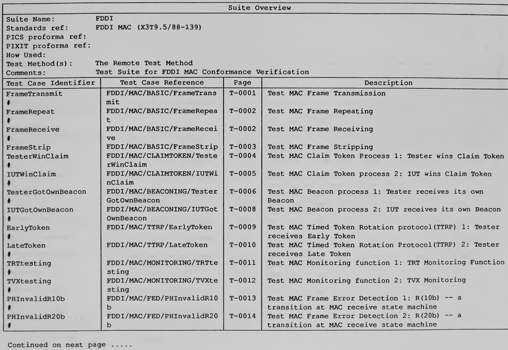
付録 A（TTCN の図表形式）の 15 ページ（横向きに印刷）で、Suite Overview の表です。スイート名 FDDI、規格参照 FDDI MAC (X3T9.5/88-139)、試験方法 The Remote Test Method を示し、テストケース FrameTransmit から PHInvalidR20b までの参照・ページ・説明を一覧にしています。次ページに続きます。
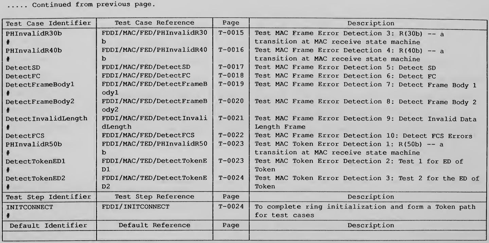
付録 A（TTCN 図表形式）の 16 ページ（横向きに印刷）で、前ページから続く Suite Overview の表です。テストケース PHInvalidR30b から DetectTokenED2 まで、テストステップ INITCONNECT、空の Default Identifier 欄について、参照・ページ・説明を示しています。
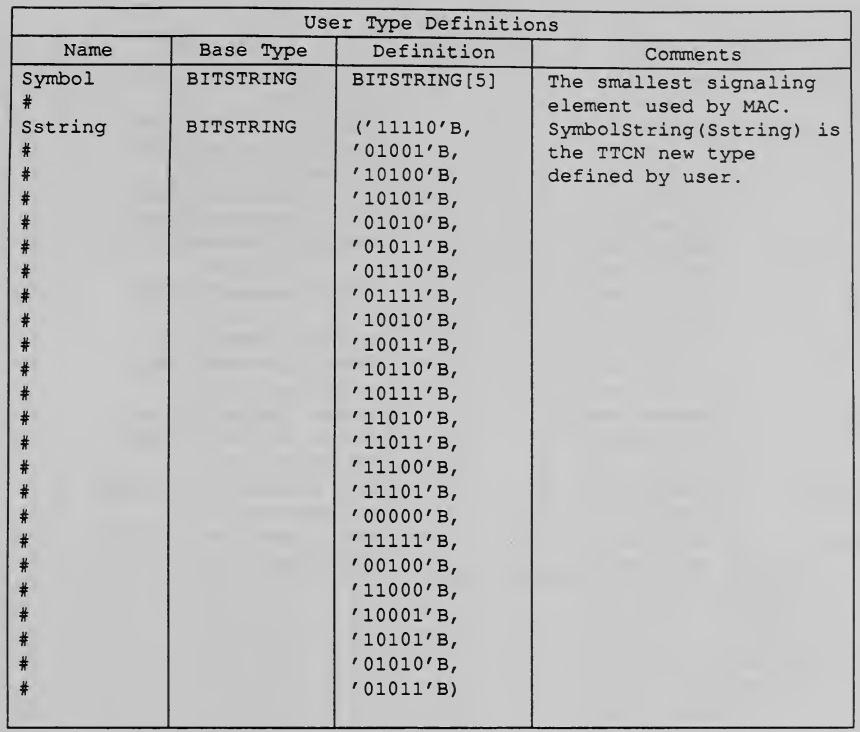
付録 A（TTCN の図表形式）の 17 ページで、User Type Definitions の表です。Symbol（BITSTRING[5]）と Sstring（5 ビットの符号群を列挙した BITSTRING）を定義し、コメントを付けています。
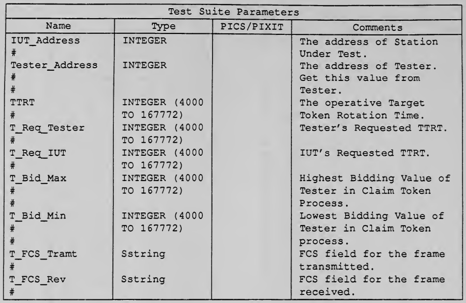
付録 A（TTCN の図表形式）の 18 ページで、Test Suite Parameters の表です。IUT_Address、Tester_Address、TTRT、T_Req_Tester、T_Req_IUT、T_Bid_Max、T_Bid_Min、T_FCS_Tramt、T_FCS_Rev の型とコメントを示しています。
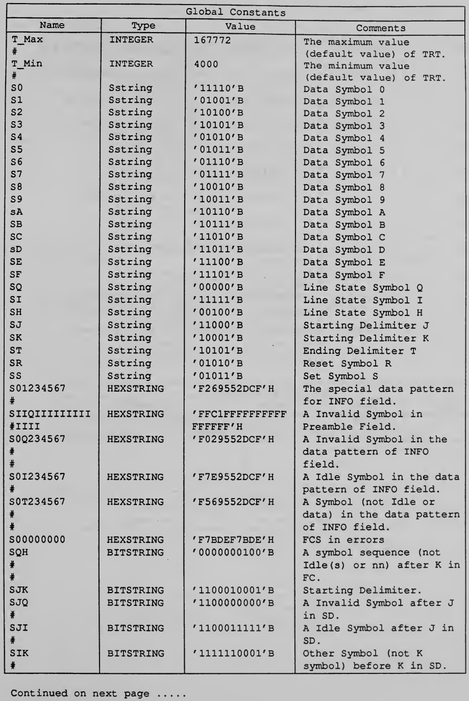
付録 A（TTCN の図表形式）の 19 ページで、Global Constants の表です。定数 T_Max、T_Min、シンボル定数 S0〜SS、HEXSTRING・BITSTRING のパターン（S01234567〜SIK）の型・値・コメントを示しています。次ページに続きます。
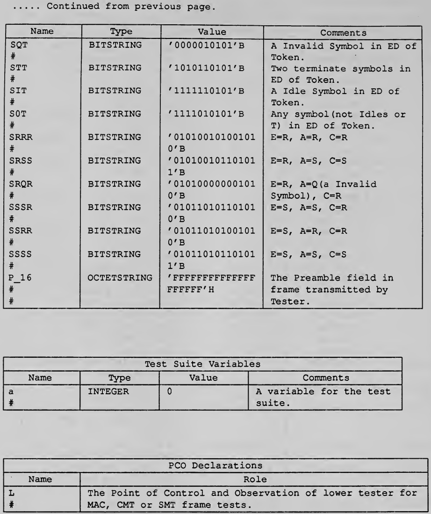
付録 A（TTCN の図表形式）の 20 ページで、前ページから続く Global Constants の表（SQT〜P_16）、Test Suite Variables の表（変数 a、INTEGER、値 0）、PCO Declarations の表（下位テスタの制御観測点 L）です。
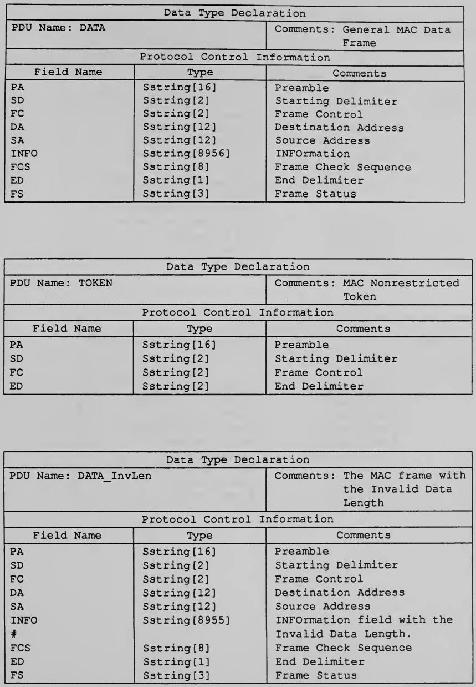
付録 A（TTCN の図表形式）の 21 ページで、PDU DATA（一般の MAC データフレーム）、TOKEN（MAC 非制限トークン）、DATA_InvLen（データ長が不正な MAC フレーム）の 3 つの Data Type Declaration の表です。それぞれプロトコル制御情報のフィールド名・型・コメントを示しています。
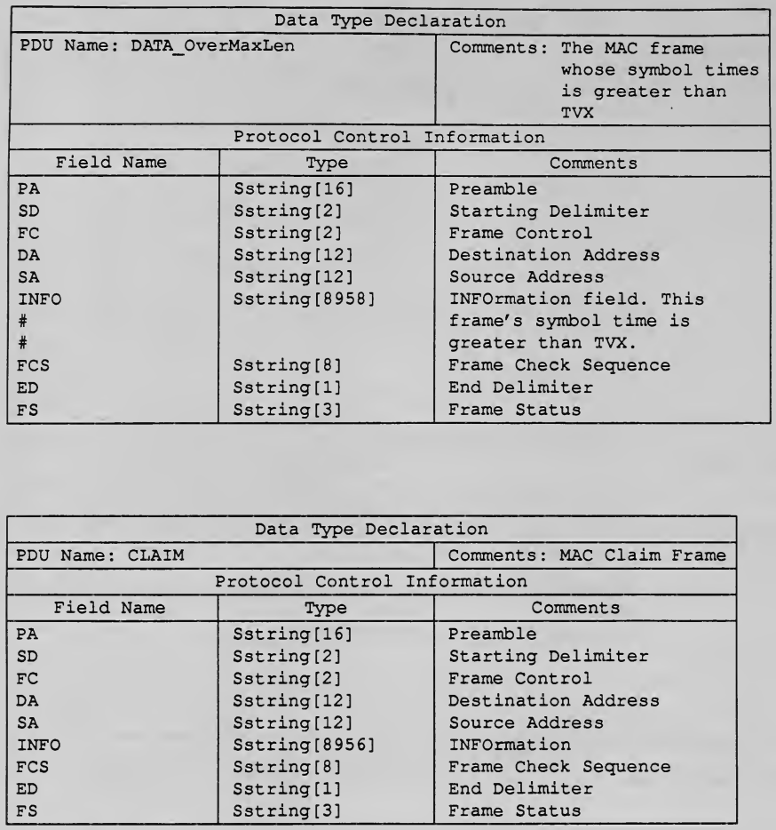
付録 A（TTCN の図表形式）の 22 ページで、PDU DATA_OverMaxLen（シンボル時間が TVX を超える MAC フレーム）と CLAIM（MAC クレームフレーム）の 2 つの Data Type Declaration の表です。プロトコル制御情報のフィールド名・型・コメントを示しています。
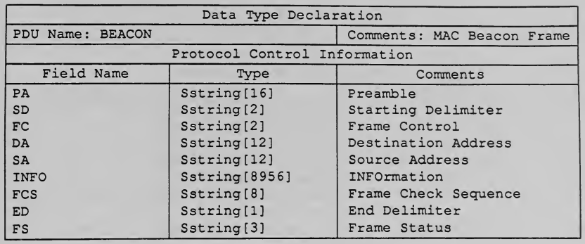
付録 A（TTCN の図表形式）の 23 ページで、PDU BEACON（MAC ビーコンフレーム）の Data Type Declaration の表です。プロトコル制御情報のフィールド PA〜FS の型とコメントを示しています。
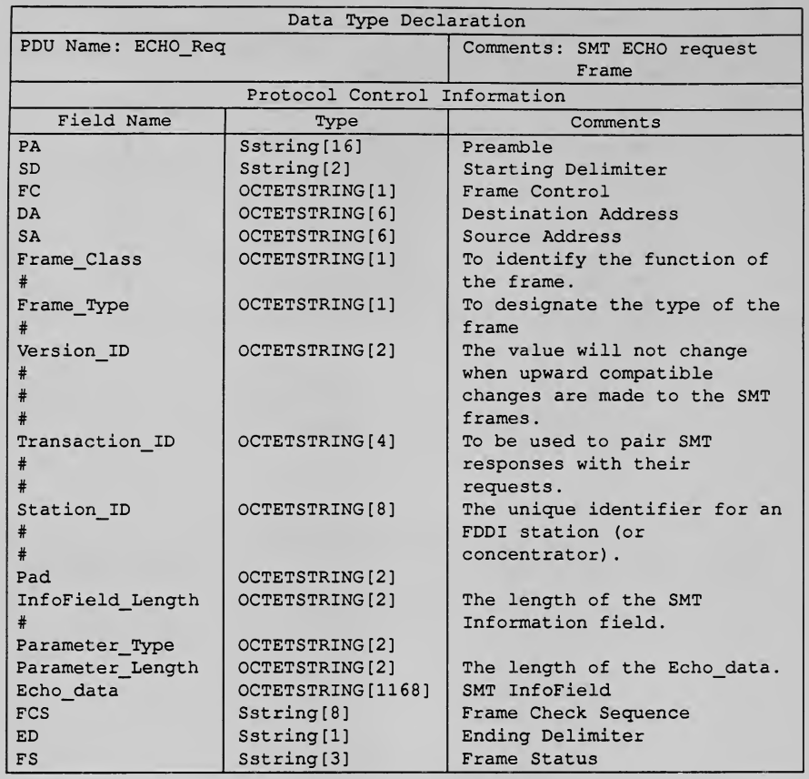
付録 A（TTCN の図表形式）の 24 ページで、PDU ECHO_Req（SMT ECHO 要求フレーム）の Data Type Declaration の表です。PA、SD、FC、DA、SA、Frame_Class、Frame_Type、Version_ID、Transaction_ID、Station_ID、Pad、InfoField_Length、Parameter_Type、Parameter_Length、Echo_data、FCS、ED、FS の各フィールドの型とコメントを示しています。
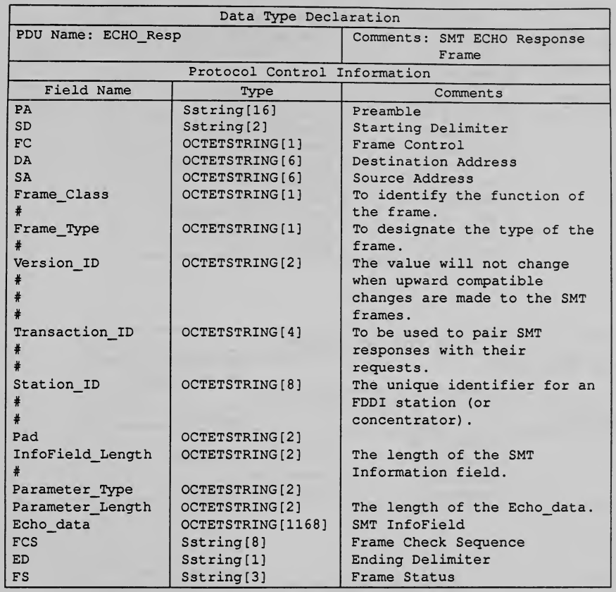
付録 A（TTCN の図表形式）の 25 ページで、PDU ECHO_Resp（SMT ECHO 応答フレーム）の Data Type Declaration の表です。ECHO_Req と同じ SMT フレームのフィールド（PA〜FS）の型とコメントを示しています。
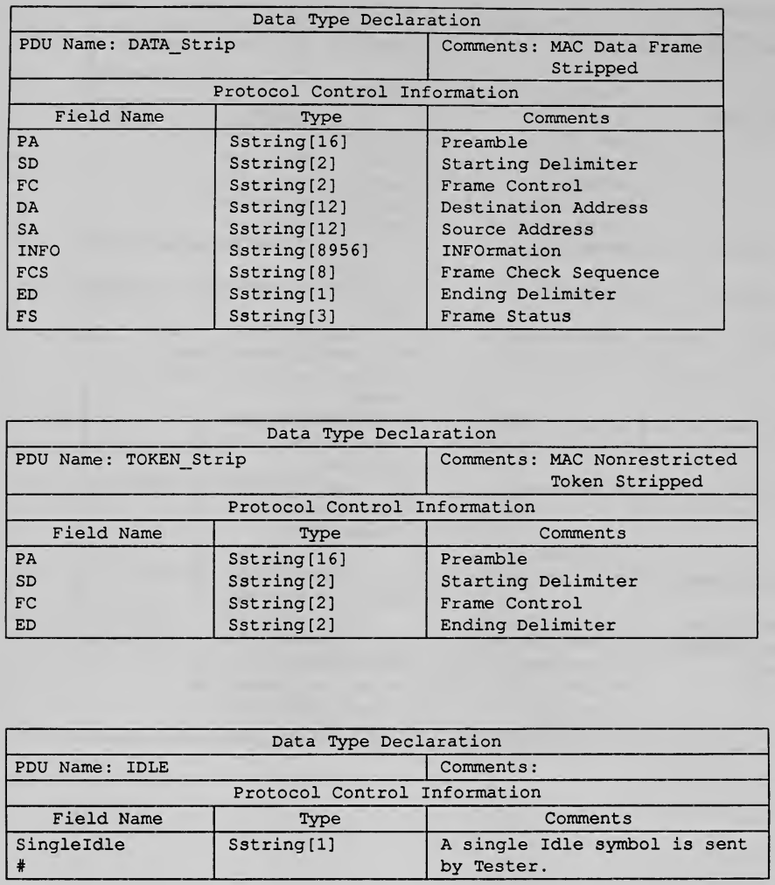
付録 A（TTCN の図表形式）の 26 ページで、PDU DATA_Strip（ストリップされた MAC データフレーム）、TOKEN_Strip（ストリップされた MAC 非制限トークン）、IDLE（Tester が送る 1 個の Idle シンボル SingleIdle）の 3 つの Data Type Declaration の表です。
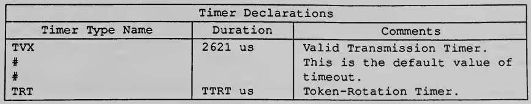
付録 A（TTCN の図表形式）の 27 ページで、Timer Declarations の表です。タイマー TVX（2621 us、有効送信タイマー、既定のタイムアウト値）と TRT（TTRT us、トークン周回タイマー）を定義しています。頁の残りは空白です。
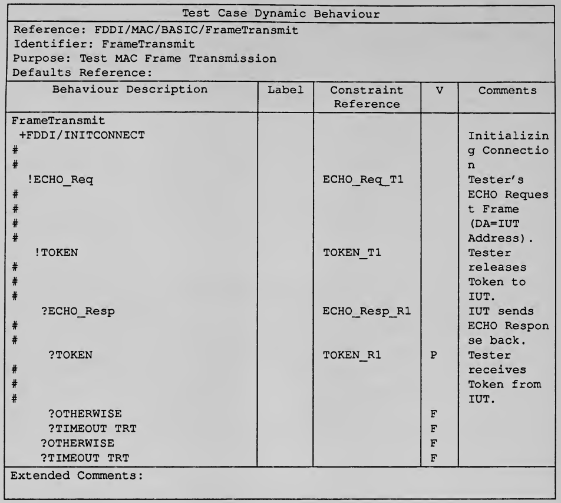
付録 A（TTCN の図表形式）の 28 ページで、テストケース FrameTransmit（参照 FDDI/MAC/BASIC/FrameTransmit、目的：MAC フレーム送信の試験）の Test Case Dynamic Behaviour の表です。動作記述の木と制約参照・判定・コメントを示しています。
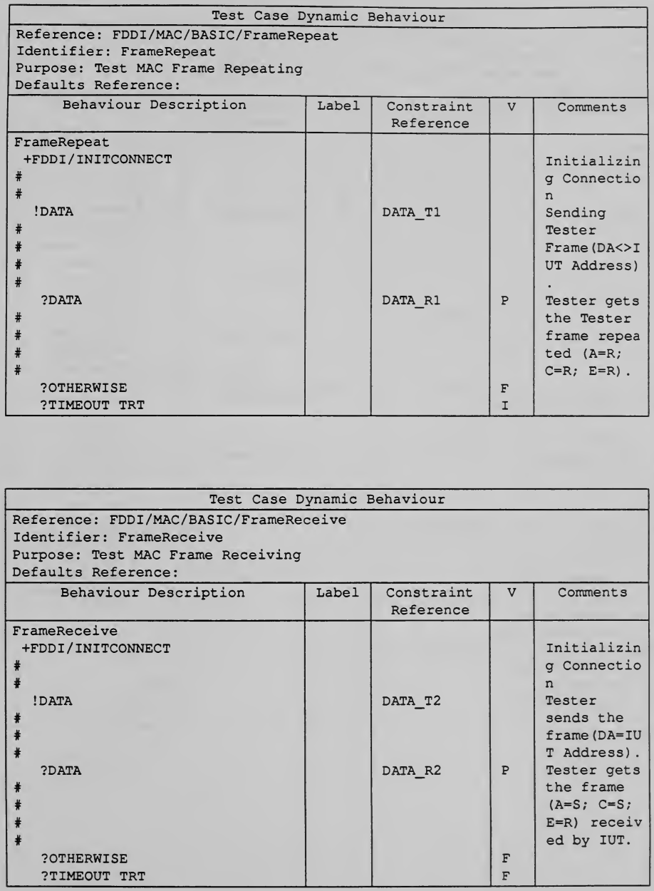
付録 A（TTCN の図表形式）の 29 ページで、テストケース FrameRepeat（FDDI/MAC/BASIC/FrameRepeat、MAC フレーム中継の試験）と FrameReceive（FDDI/MAC/BASIC/FrameReceive、MAC フレーム受信の試験）の 2 つの Test Case Dynamic Behaviour の表です。動作記述の木、制約参照、判定、コメントを示しています。
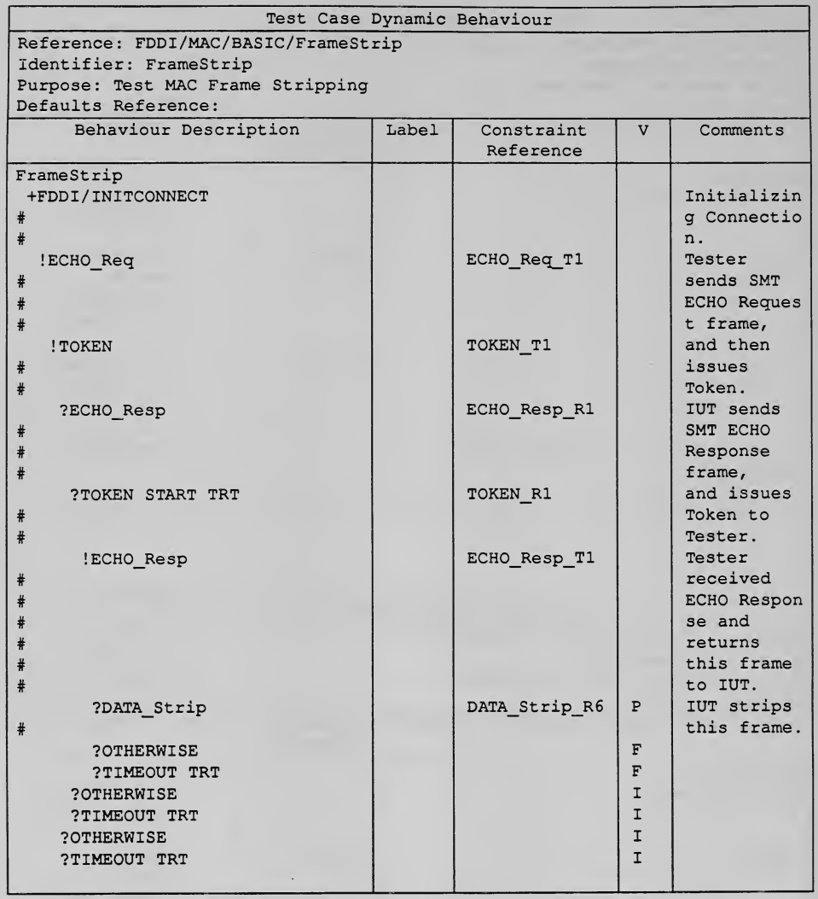
付録 A（TTCN の図表形式）の 30 ページで、テストケース FrameStrip（参照 FDDI/MAC/BASIC/FrameStrip、目的：MAC フレームのストリッピングの試験）の Test Case Dynamic Behaviour の表です。動作記述の木と制約参照・判定・コメントを示しています。
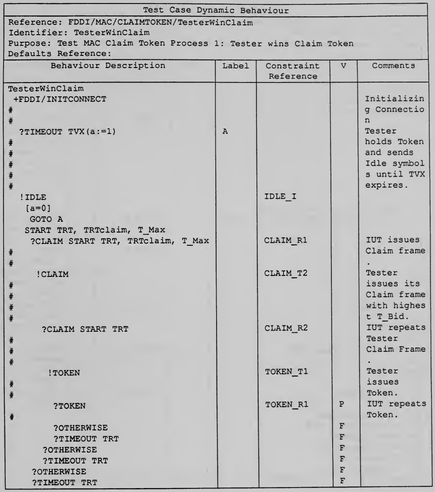
付録 A（TTCN の図表形式）の 31 ページで、テストケース TesterWinClaim（参照 FDDI/MAC/CLAIMTOKEN/TesterWinClaim、目的：MAC のクレームトークン処理の試験 1、Tester がクレームトークンを獲得する場合）の Test Case Dynamic Behaviour の表です。動作記述の木、ラベル、制約参照、判定、コメントを示しています。
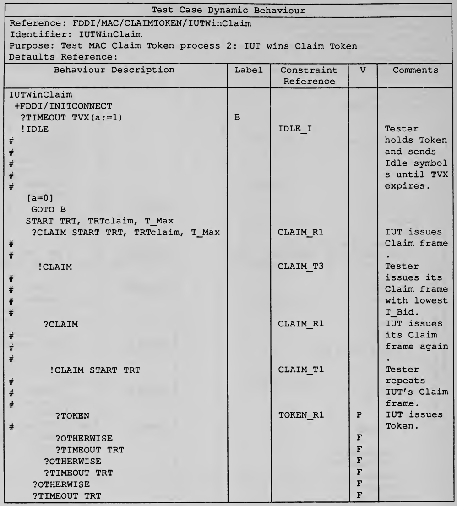
付録 A（TTCN の図表形式）の 32 ページで、テストケース IUTWinClaim（参照 FDDI/MAC/CLAIMTOKEN/IUTWinClaim、目的：MAC のクレームトークン処理の試験 2、IUT がクレームトークンを獲得する場合）の Test Case Dynamic Behaviour の表です。動作記述の木、ラベル、制約参照、判定、コメントを示しています。
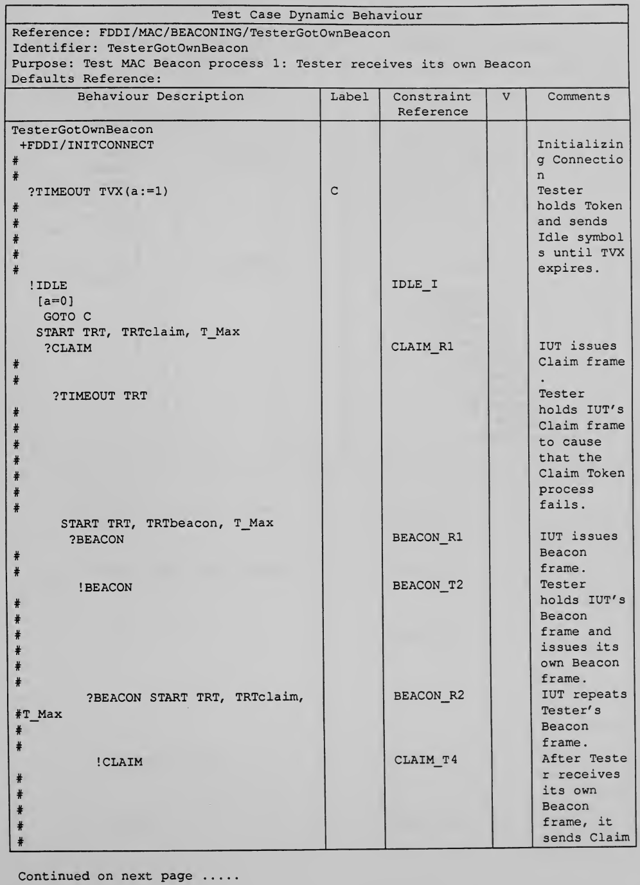
付録 A（TTCN の図表形式）の 33 ページで、テストケース TesterGotOwnBeacon（参照 FDDI/MAC/BEACONING/TesterGotOwnBeacon、目的：MAC のビーコン処理の試験 1、Tester が自身のビーコンを受信する場合）の Test Case Dynamic Behaviour の表です。動作記述の木の前半を、ラベル・制約参照・コメントとともに示しています。次ページに続きます。
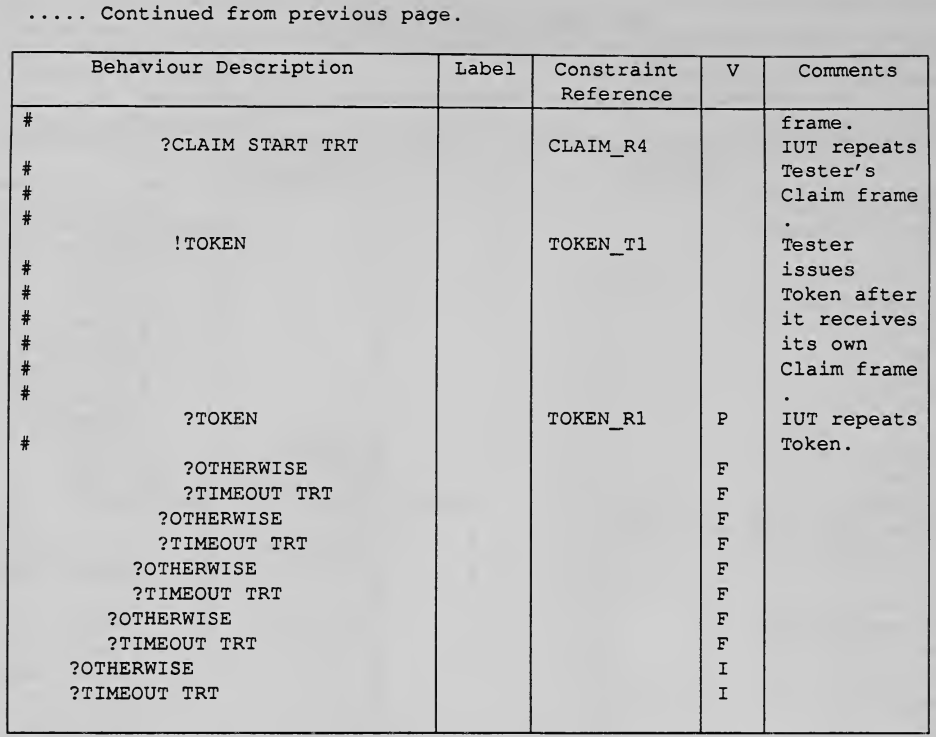
付録 A（TTCN の図表形式）の 34 ページで、前ページから続く TesterGotOwnBeacon の Test Case Dynamic Behaviour の表です。動作記述の木の残り（?CLAIM、!TOKEN、?TOKEN と OTHERWISE／TIMEOUT の分岐）を、制約参照・判定・コメントとともに示しています。
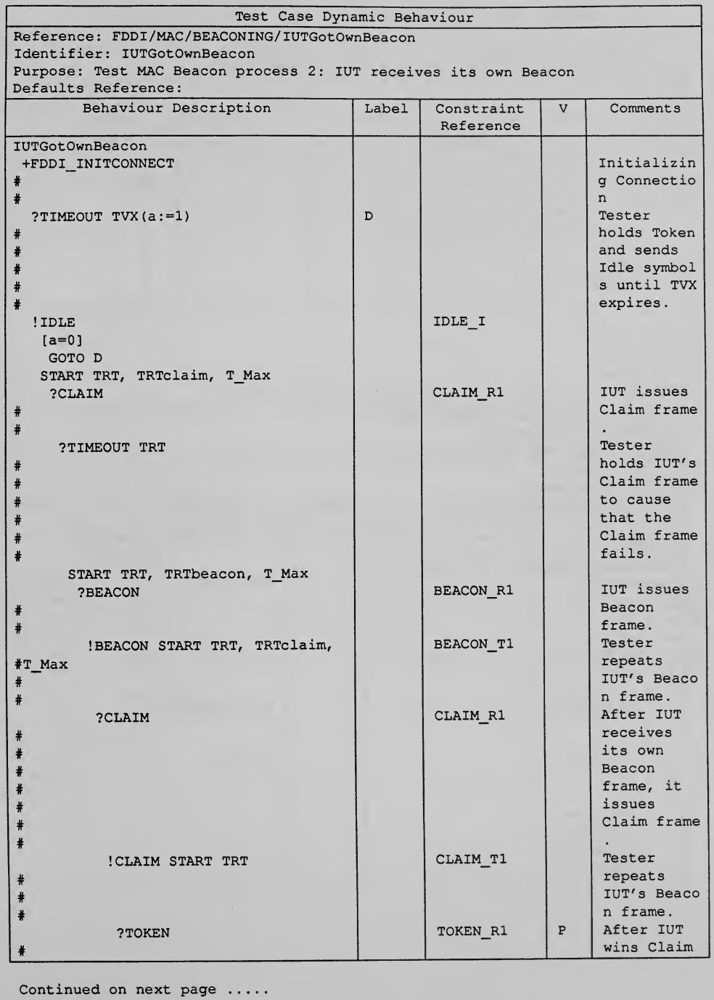
付録 A（TTCN の図表形式）の 35 ページで、テストケース IUTGotOwnBeacon（参照 FDDI/MAC/BEACONING/IUTGotOwnBeacon、目的：MAC のビーコン処理の試験 2、IUT が自身のビーコンを受信する場合）の Test Case Dynamic Behaviour の表です。動作記述の木の前半を、ラベル・制約参照・判定・コメントとともに示しています。次ページに続きます。
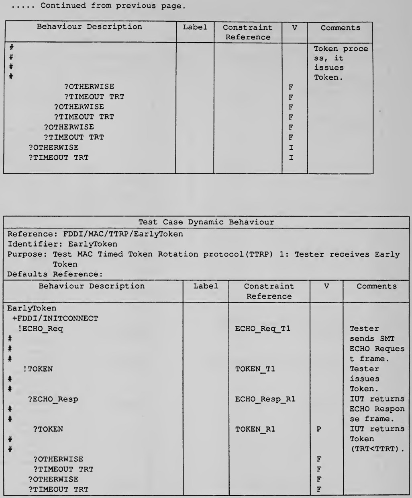
付録 A（TTCN の図表形式）の 36 ページで、前ページから続く IUTGotOwnBeacon の Test Case Dynamic Behaviour の表の末尾（OTHERWISE／TIMEOUT の分岐と判定）と、テストケース EarlyToken（参照 FDDI/MAC/TTRP/EarlyToken、目的：MAC の時間制御トークン周回プロトコル (TTRP) の試験 1、Tester が早着トークンを受信する場合）の Test Case Dynamic Behaviour の表です。
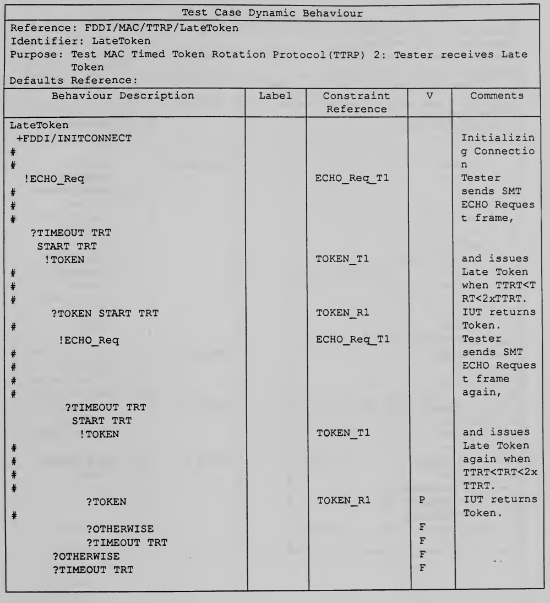
付録 A（TTCN の図表形式）の 37 ページで、テストケース LateToken（参照 FDDI/MAC/TTRP/LateToken、目的：MAC の時間制御トークン周回プロトコル (TTRP) の試験 2、Tester が遅着トークンを受信する場合）の Test Case Dynamic Behaviour の表です。動作記述の木と制約参照・判定・コメントを示しています。
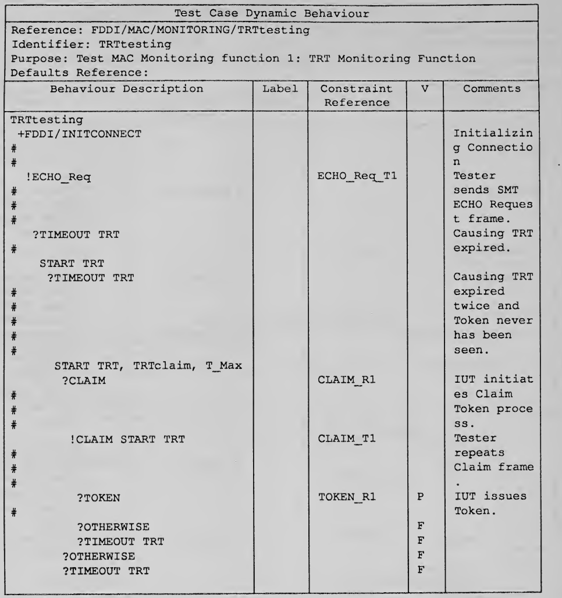
付録 A（TTCN の図表形式）の 38 ページで、テストケース TRTtesting（参照 FDDI/MAC/MONITORING/TRTtesting、目的：MAC の監視機能の試験 1、TRT 監視機能）の Test Case Dynamic Behaviour の表です。動作記述の木と制約参照・判定・コメントを示しています。
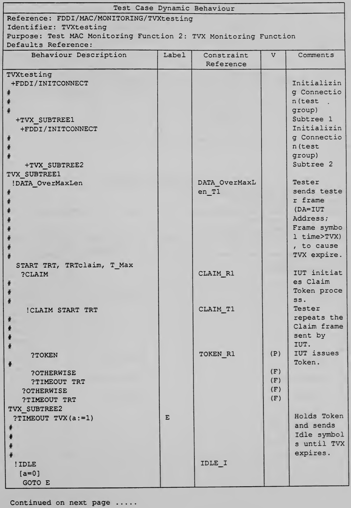
付録 A（TTCN の図表形式）の 39 ページで、テストケース TVXtesting（参照 FDDI/MAC/MONITORING/TVXtesting、目的：MAC の監視機能の試験 2、TVX 監視機能）の Test Case Dynamic Behaviour の表です。部分木 TVX_SUBTREE1・TVX_SUBTREE2 を含む動作記述の木の前半を、ラベル・制約参照・判定・コメントとともに示しています。次ページに続きます。
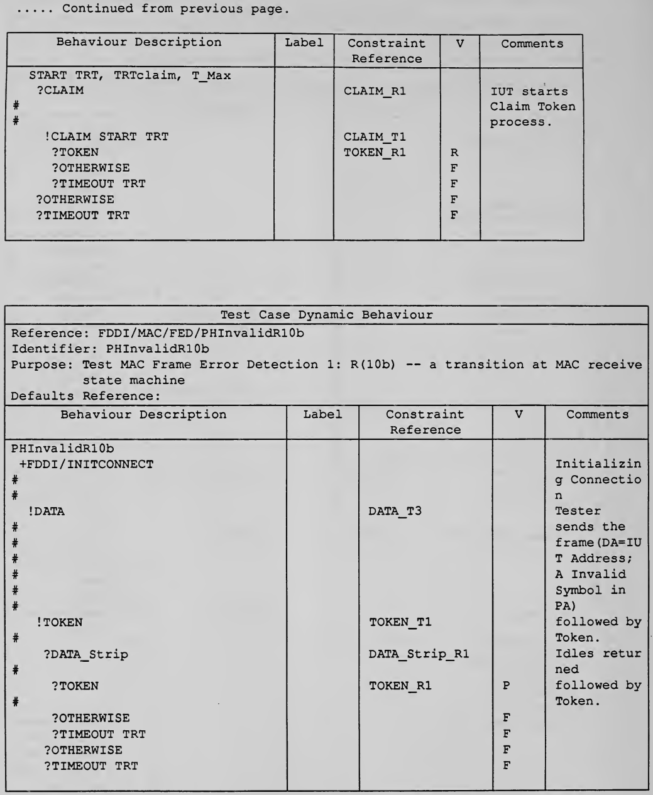
付録 A（TTCN の図表形式）の 40 ページで、前ページから続く TVXtesting の Test Case Dynamic Behaviour の表の末尾と、テストケース PHInvalidR10b（参照 FDDI/MAC/FED/PHInvalidR10b、目的：MAC のフレーム誤り検出の試験 1、MAC 受信状態機械での遷移 R(10b)）の Test Case Dynamic Behaviour の表です。
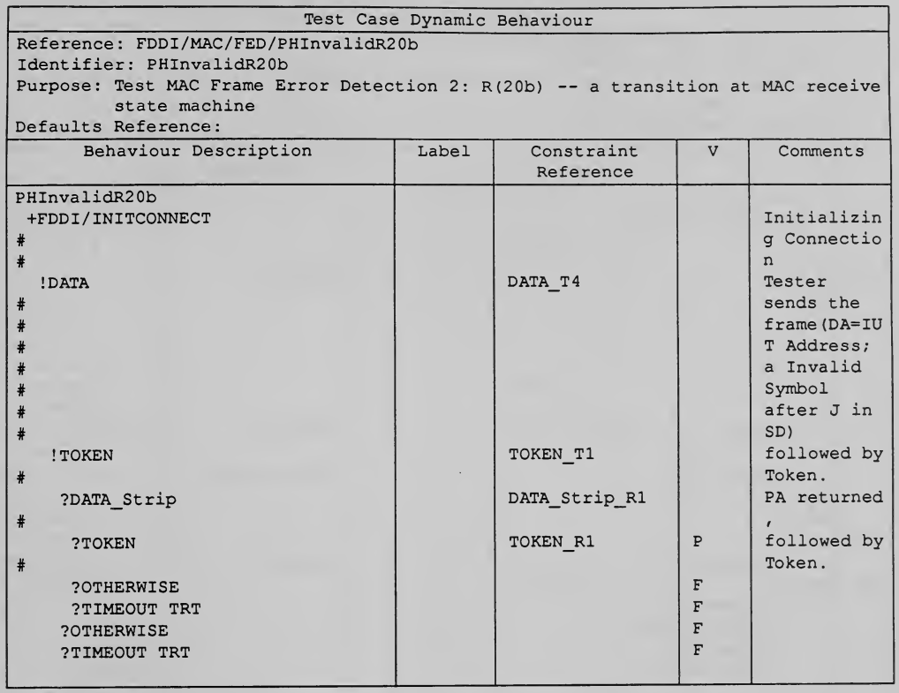
付録 A（TTCN の図表形式）の 41 ページで、テストケース PHInvalidR20b（参照 FDDI/MAC/FED/PHInvalidR20b、目的：MAC のフレーム誤り検出の試験 2、MAC 受信状態機械での遷移 R(20b)）の Test Case Dynamic Behaviour の表です。動作記述の木と制約参照・判定・コメントを示しています。
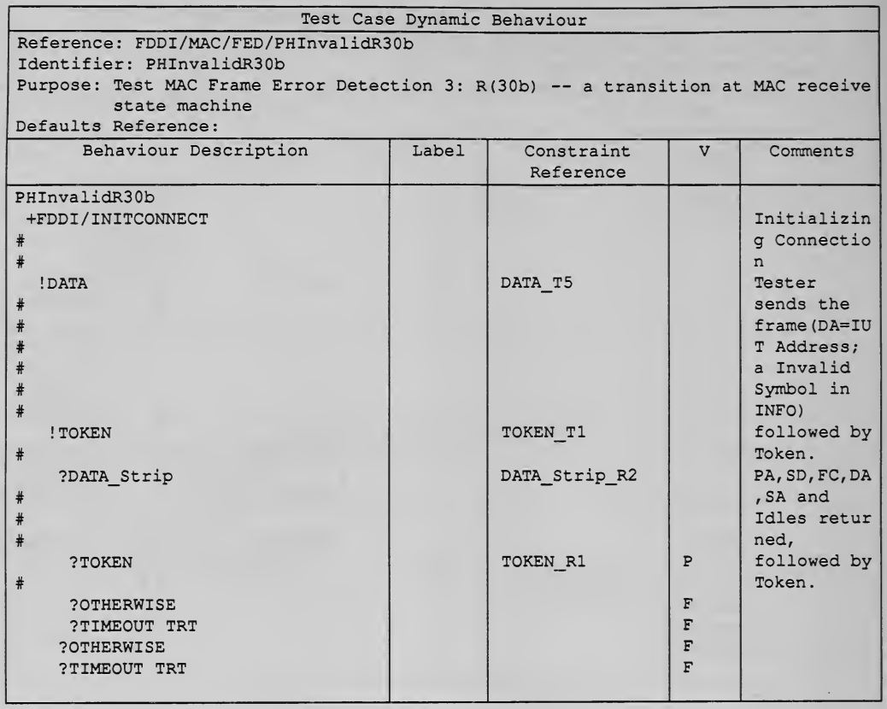
付録 A（TTCN の図表形式）の 42 ページで、テストケース PHInvalidR30b（参照 FDDI/MAC/FED/PHInvalidR30b、目的：MAC のフレーム誤り検出の試験 3、MAC 受信状態機械での遷移 R(30b)）の Test Case Dynamic Behaviour の表です。動作記述の木と制約参照・判定・コメントを示しています。
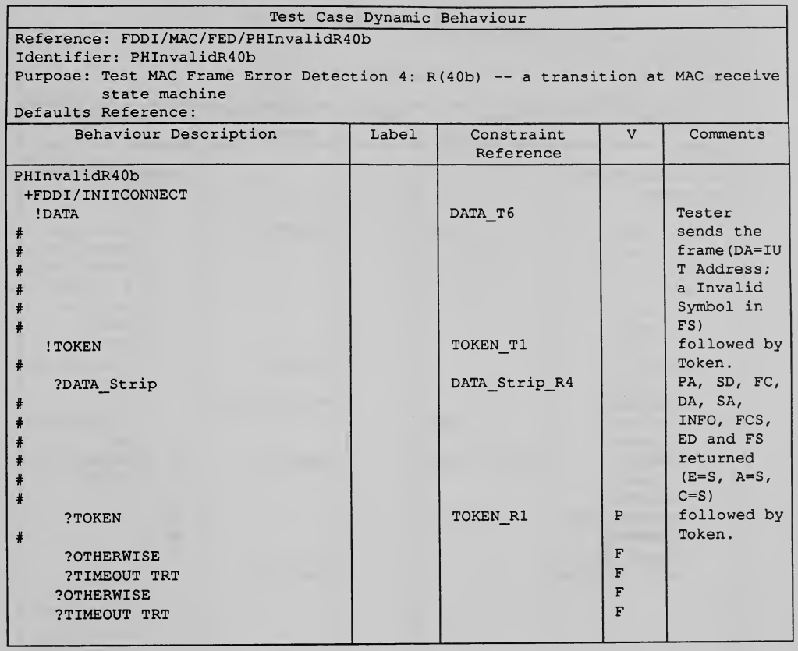
付録 A（TTCN の図表形式）の 43 ページで、テストケース PHInvalidR40b（参照 FDDI/MAC/FED/PHInvalidR40b、目的：MAC のフレーム誤り検出の試験 4、MAC 受信状態機械での遷移 R(40b)）の Test Case Dynamic Behaviour の表です。動作記述の木と制約参照・判定・コメントを示しています。
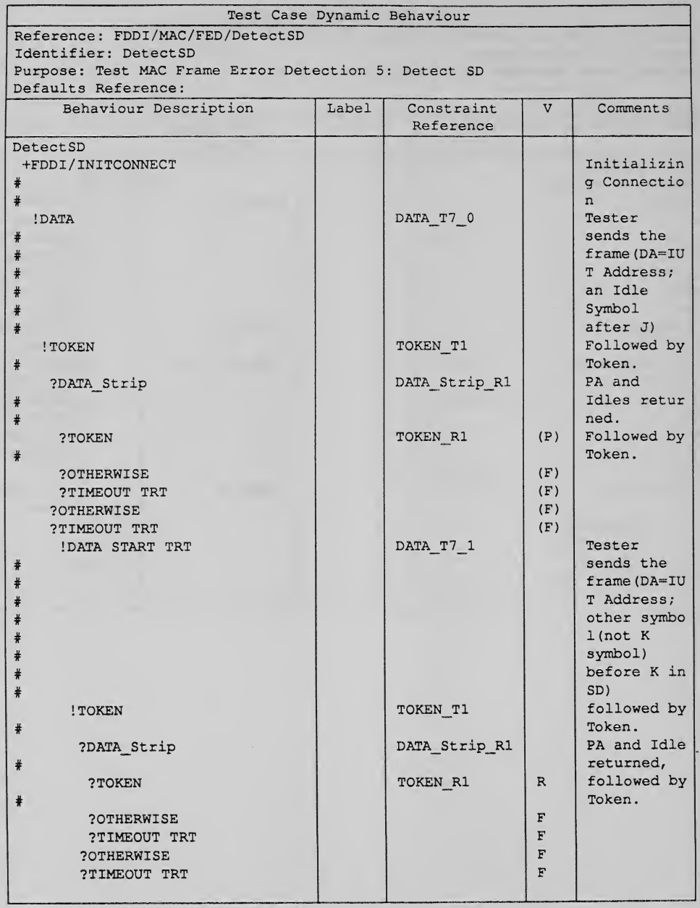
付録 A（TTCN の図表形式）の 44 ページで、テストケース DetectSD（参照 FDDI/MAC/FED/DetectSD、目的：MAC のフレーム誤り検出の試験 5、SD の検出）の Test Case Dynamic Behaviour の表です。動作記述の木と制約参照・判定・コメントを示しています。
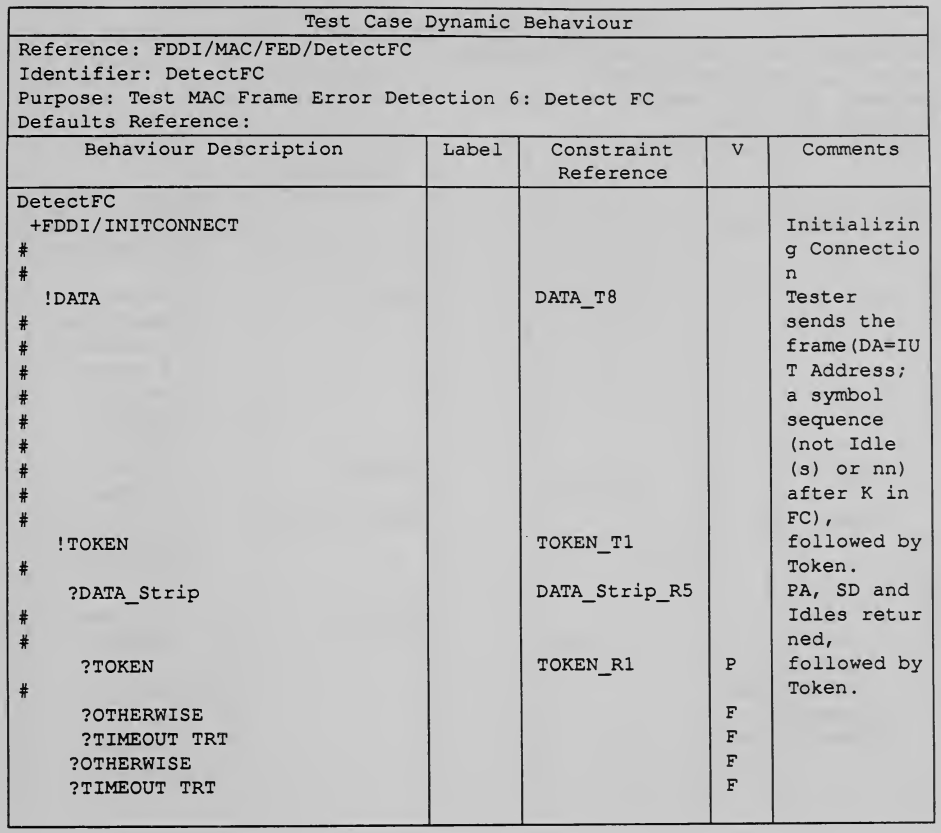
付録 A（TTCN の図表形式）の 45 ページで、テストケース DetectFC（参照 FDDI/MAC/FED/DetectFC、目的：MAC のフレーム誤り検出の試験 6、FC の検出）の Test Case Dynamic Behaviour の表です。動作記述の木と制約参照・判定・コメントを示しています。
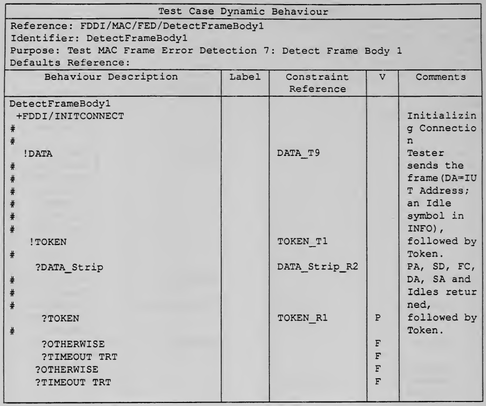
付録 A（TTCN の図表形式）の 46 ページで、テストケース DetectFrameBody1（参照 FDDI/MAC/FED/DetectFrameBody1、目的：MAC のフレーム誤り検出の試験 7、フレーム本体の検出 1）の Test Case Dynamic Behaviour の表です。動作記述の木と制約参照・判定・コメントを示しています。
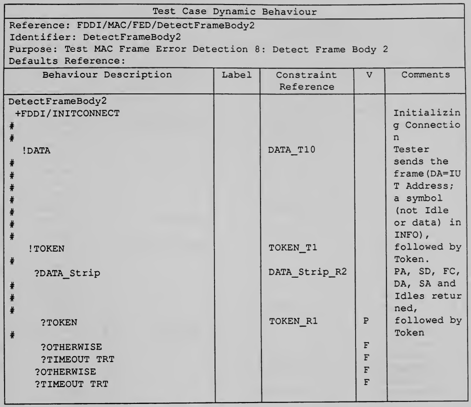
付録 A（TTCN の図表形式）の 47 ページで、テストケース DetectFrameBody2（参照 FDDI/MAC/FED/DetectFrameBody2、目的：MAC のフレーム誤り検出の試験 8、フレーム本体の検出 2）の Test Case Dynamic Behaviour の表です。動作記述の木と制約参照・判定・コメントを示しています。
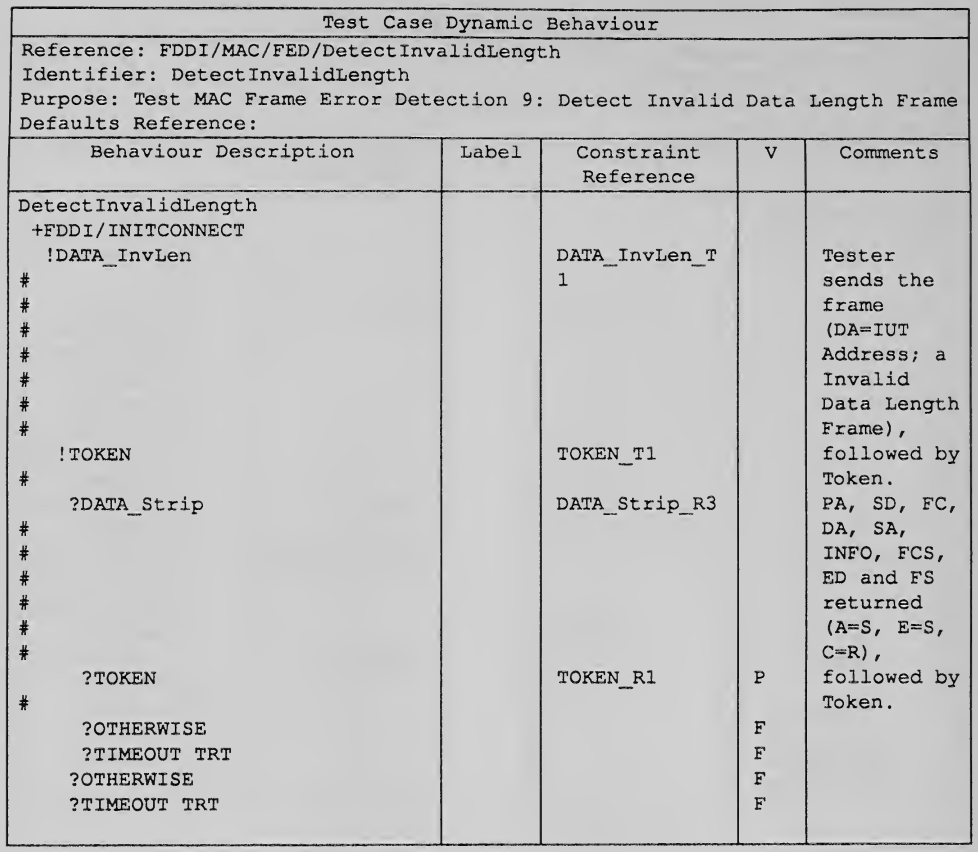
付録 A（TTCN の図表形式）の 48 ページで、テストケース DetectInvalidLength（参照 FDDI/MAC/FED/DetectInvalidLength、目的：MAC のフレーム誤り検出の試験 9、データ長が不正なフレームの検出）の Test Case Dynamic Behaviour の表です。動作記述の木と制約参照・判定・コメントを示しています。
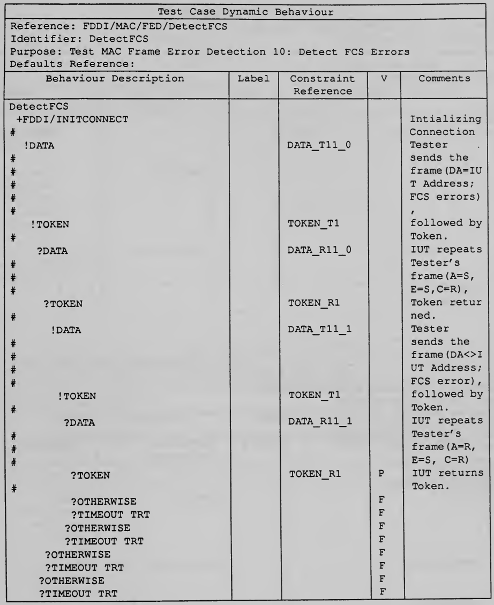
付録 A（TTCN の図表形式）の 49 ページで、テストケース DetectFCS（参照 FDDI/MAC/FED/DetectFCS、目的：MAC のフレーム誤り検出の試験 10、FCS 誤りの検出）の Test Case Dynamic Behaviour の表です。動作記述の木と制約参照・判定・コメントを示しています。
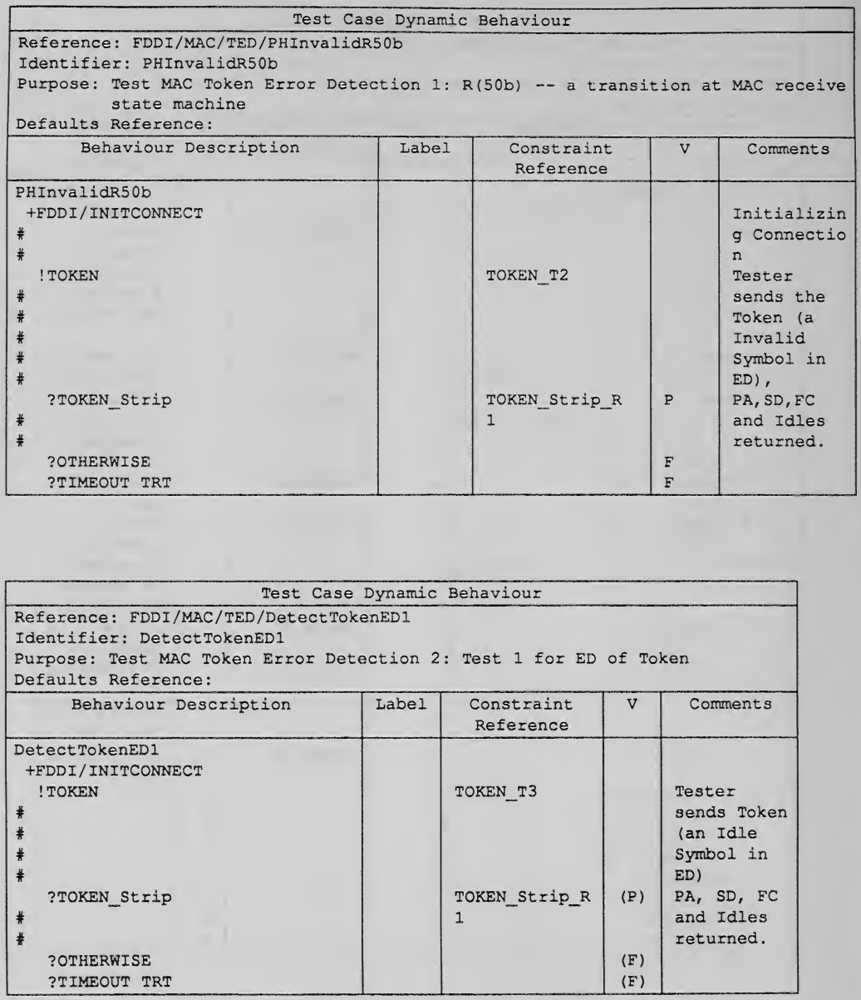
付録 A（TTCN の図表形式）の 50 ページで、テストケース PHInvalidR50b（FDDI/MAC/TED/PHInvalidR50b、MAC のトークン誤り検出の試験 1、MAC 受信状態機械での遷移 R(50b)）と DetectTokenED1（FDDI/MAC/TED/DetectTokenED1、MAC のトークン誤り検出の試験 2、トークンの ED に関する試験 1）の 2 つの Test Case Dynamic Behaviour の表です。動作記述の木、制約参照、判定、コメントを示しています。
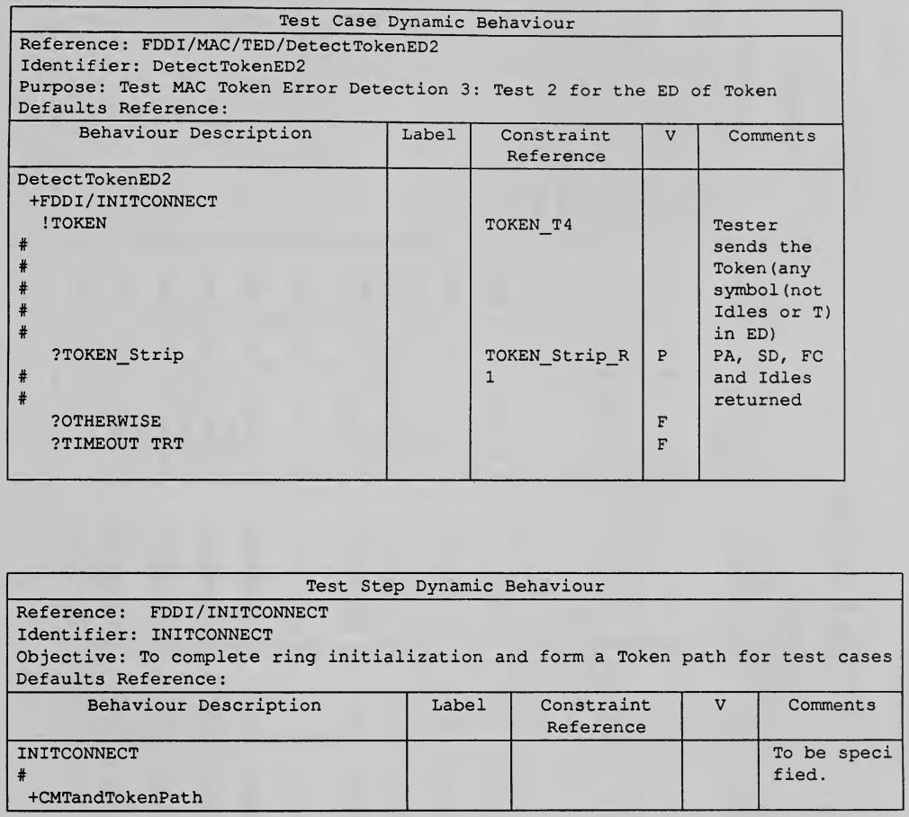
付録 A（TTCN の図表形式）の 51 ページで、テストケース DetectTokenED2（参照 FDDI/MAC/TED/DetectTokenED2、目的：MAC のトークン誤り検出の試験 3、トークンの ED に関する試験 2）の Test Case Dynamic Behaviour の表と、テストステップ INITCONNECT（参照 FDDI/INITCONNECT、目的：リングの初期化を完了し試験用のトークン経路を形成すること、コメント「To be specified」）の Test Step Dynamic Behaviour の表です。
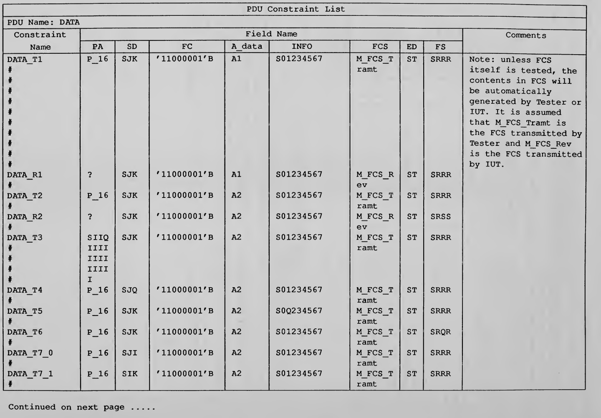
付録 A（TTCN の図表形式）の 52 ページ（横向きに印刷）で、PDU DATA の PDU Constraint List の表です。制約 DATA_T1〜DATA_T7_1 の各フィールド（PA、SD、FC、A_data、INFO、FCS、ED、FS）の値と、FCS の生成についてのコメントを示しています。次ページに続きます。
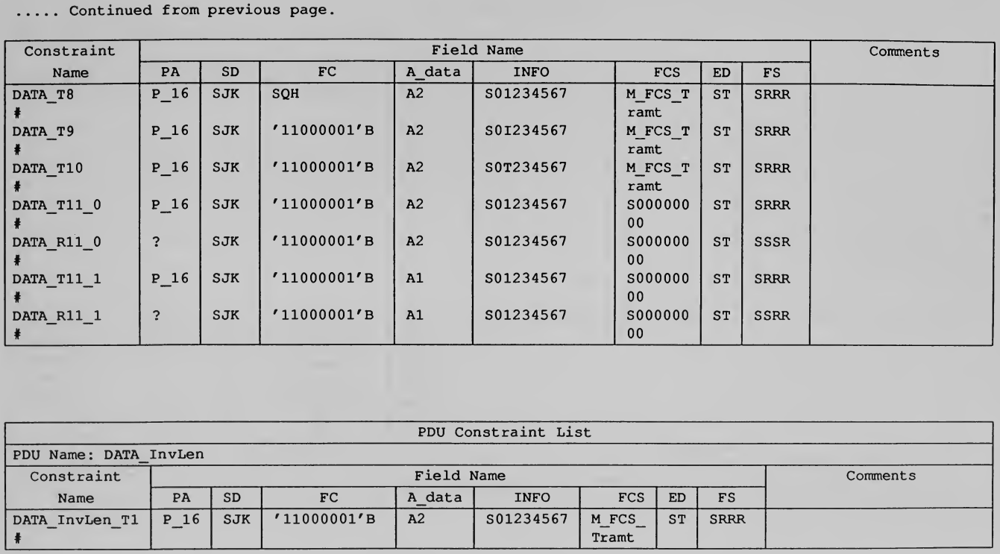
付録 A（TTCN の図表形式）の 53 ページ（横向きに印刷）で、前ページから続く DATA の PDU Constraint List（制約 DATA_T8〜DATA_R11_1）と、PDU DATA_InvLen の PDU Constraint List の表（制約 DATA_InvLen_T1）です。
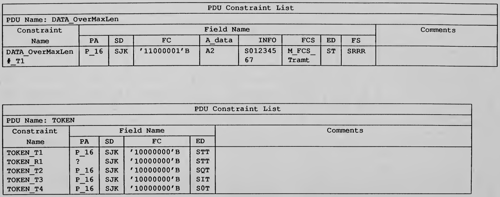
付録 A（TTCN の図表形式）の 54 ページ（横向きに印刷）で、PDU DATA_OverMaxLen（制約 DATA_OverMaxLen_T1）と PDU TOKEN（制約 TOKEN_T1、TOKEN_R1、TOKEN_T2〜TOKEN_T4）の 2 つの PDU Constraint List の表です。各制約のフィールド値を示しています。
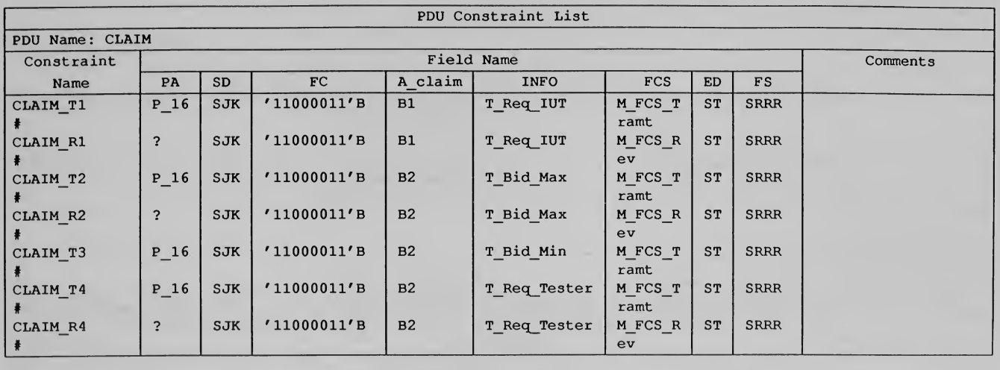
付録 A（TTCN の図表形式）の 55 ページ（横向きに印刷）で、PDU CLAIM の PDU Constraint List の表です。制約 CLAIM_T1〜CLAIM_R4 の各フィールド（PA、SD、FC、A_claim、INFO、FCS、ED、FS）の値を示しています。
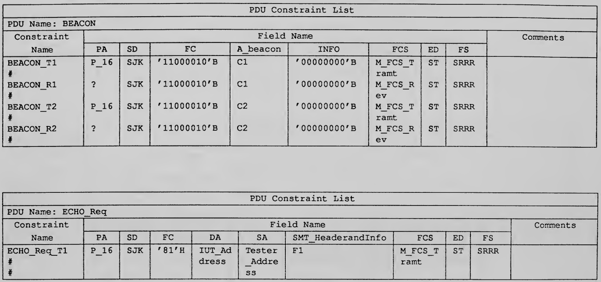
付録 A（TTCN の図表形式）の 56 ページ（横向きに印刷）で、PDU BEACON（制約 BEACON_T1、BEACON_R1、BEACON_T2、BEACON_R2）と PDU ECHO_Req（制約 ECHO_Req_T1）の 2 つの PDU Constraint List の表です。各制約のフィールド値を示しています。
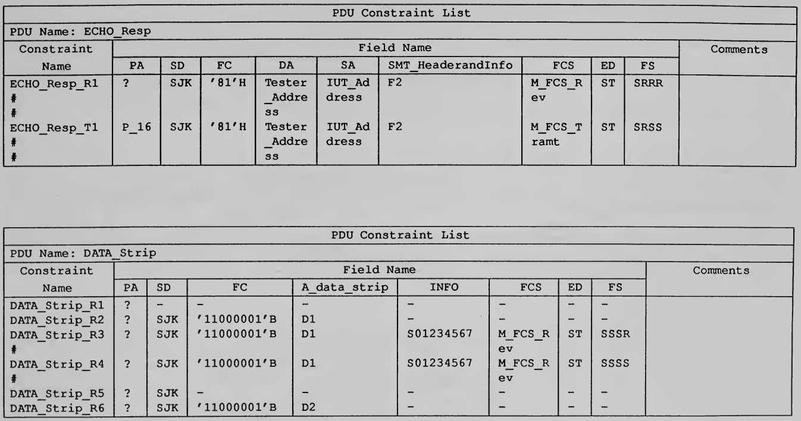
付録 A（TTCN の図表形式）の 57 ページ（横向きに印刷）で、PDU ECHO_Resp（制約 ECHO_Resp_R1、ECHO_Resp_T1）と PDU DATA_Strip（制約 DATA_Strip_R1〜DATA_Strip_R6）の 2 つの PDU Constraint List の表です。各制約のフィールド値を示しています。
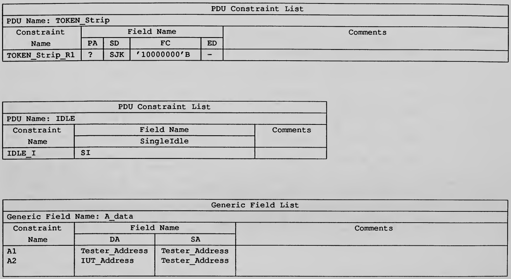
付録 A（TTCN の図表形式）の 58 ページ（横向きに印刷）で、PDU TOKEN_Strip（制約 TOKEN_Strip_R1）と PDU IDLE（制約 IDLE_I、SingleIdle = SI）の PDU Constraint List の表と、A_data の Generic Field List（制約 A1・A2 の DA・SA アドレス）です。
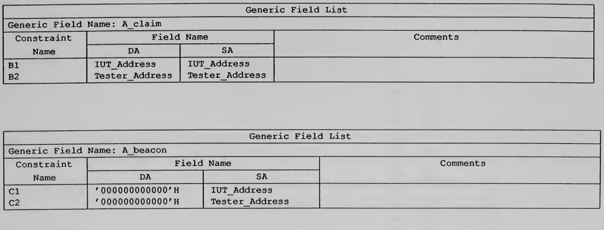
付録 A（TTCN の図表形式）の 59 ページ（横向きに印刷）で、A_claim（制約 B1・B2）と A_beacon（制約 C1・C2）の 2 つの Generic Field List の表です。各制約の DA・SA の値を示しています。
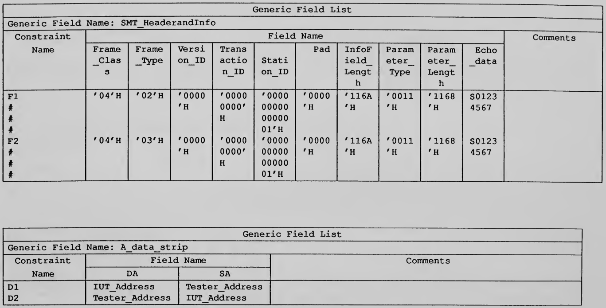
付録 A（TTCN の図表形式）の 60 ページ（横向きに印刷）で、SMT_HeaderandInfo（制約 F1・F2、SMT ヘッダと Echo_data の各フィールド値）と A_data_strip（制約 D1・D2 の DA・SA アドレス）の 2 つの Generic Field List の表です。
Appendix B
FDDI MAC Conformance Test
TTCN Machine Processable Form
付録 B
FDDI MAC 適合性試験
TTCN 機械処理可能形式
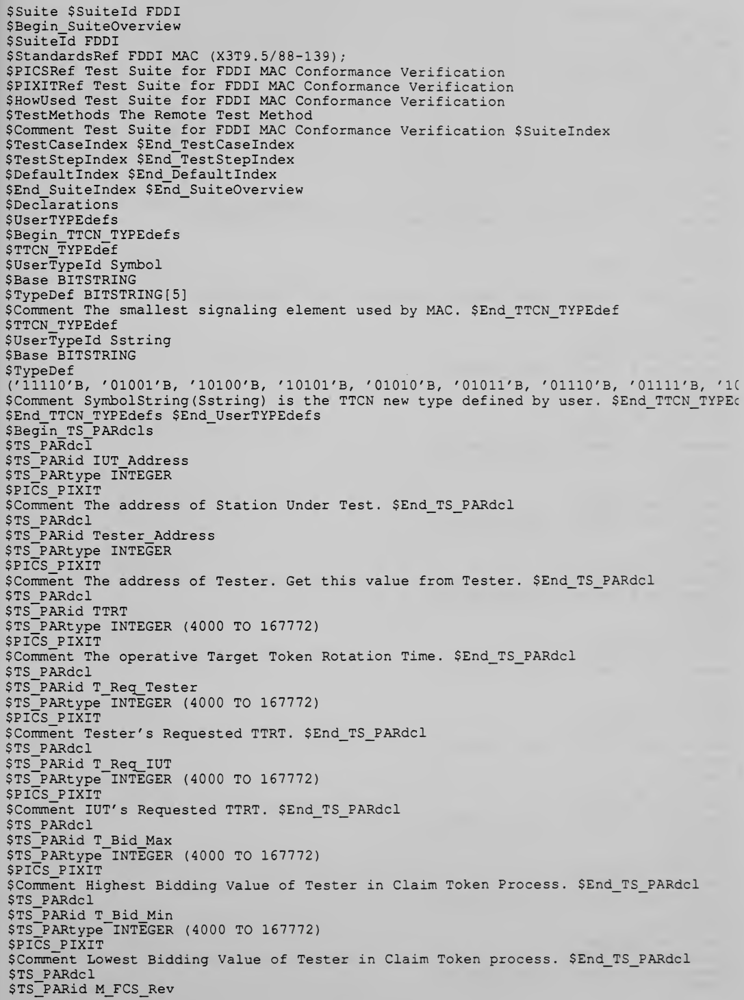
付録 B（TTCN の機械処理形式 TTCN.MP）の 63 ページで、テストスイートの概要（$Suite FDDI、$Begin_SuiteOverview、参照規格 FDDI MAC (X3T9.5/88-139)、試験方法、スイート索引）、利用者定義型（Symbol、Sstring）、テストスイートパラメータ宣言の前半（IUT_Address、Tester_Address、TTRT、T_Req_Tester、T_Req_IUT、T_Bid_Max、T_Bid_Min、M_FCS_Rev）の記述の一覧です。長い行は原本でも右端で切れています。
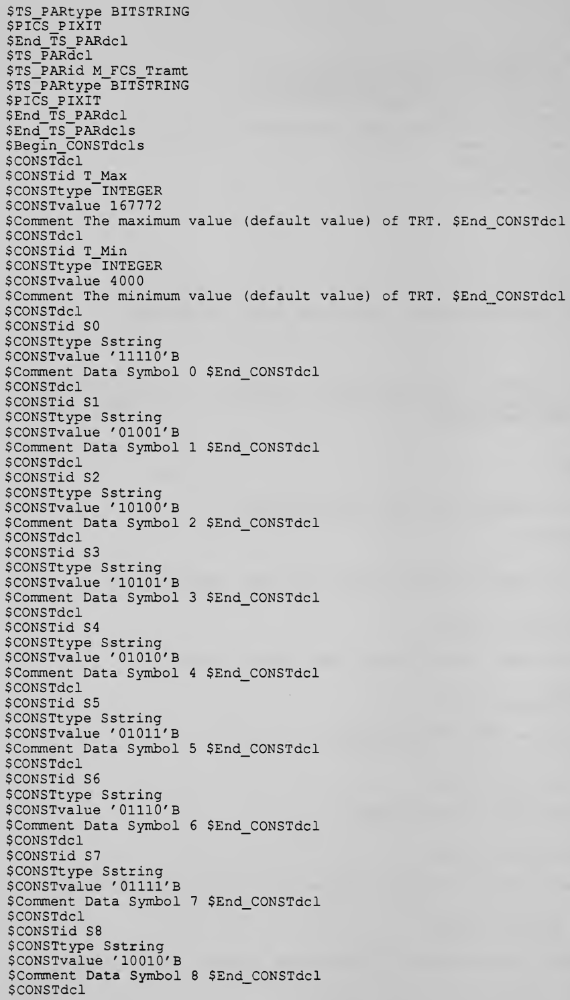
付録 B（TTCN の機械処理形式 TTCN.MP）の 64 ページで、テストスイートパラメータ宣言の終わり（M_FCS_Rev、M_FCS_Tramt）と、定数宣言（$Begin_CONSTdcls）の始まりとして TRT の上下限 T_Max・T_Min と Sstring 型のデータ記号 S0〜S8 の記述の一覧です。
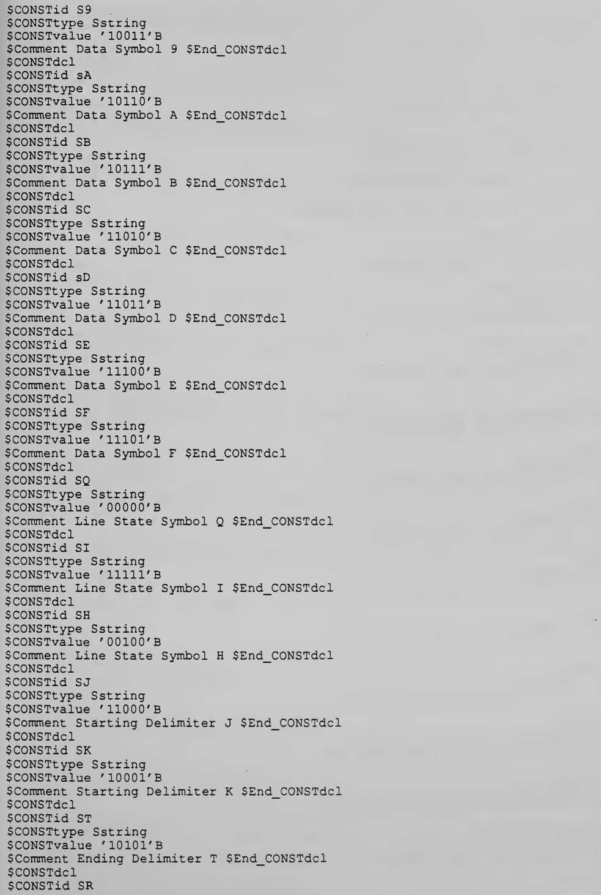
付録 B（TTCN の機械処理形式 TTCN.MP）の 65 ページで、定数宣言（$CONSTdcl）として、データ記号 S9・A〜F、ライン状態記号 Q・I・H、開始デリミタ J・K、終了デリミタ T、および SR の定数宣言の始まりの記述の一覧です。
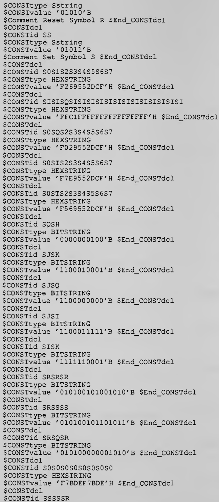
付録 B（TTCN の機械処理形式 TTCN.MP）の 66 ページで、リセット記号 R とセット記号 S の定数宣言と、それに続く HEXSTRING 型・BITSTRING 型の記号列定数（S0S1S2S3S4S5S6S7、SQSH、SJSK、SJSQ、SJSI、SISK、SRSRSR、SRSSSS、SRSQSR、S0S0S0S0S0S0S0S0、SSSSSR など）の記述の一覧です。
付録 B（TTCN の機械処理形式 TTCN.MP）の 67 ページで、最後の記号列定数（SSSRSR、SQST、STST、SIST、S0ST、SSSSSS）とプリアンブル定数 P_16、テストスイート変数宣言（a）、PCO 宣言（下位テスタの制御観測点 L）、および PDU 型宣言の始まりとして一般 MAC データフレーム DATA とそのフィールド PA・SD・FC・DA・SA の記述の一覧です。
付録 B（TTCN の機械処理形式 TTCN.MP）の 68 ページで、PDU 型宣言として、DATA の残りのフィールド（INFO、FCS、ED、FS）、MAC 非制限トークン TOKEN（PA、SD、FC、ED）、および無効なデータ長の MAC フレーム DATA_InvLen の前半の記述の一覧です。
付録 B（TTCN の機械処理形式 TTCN.MP）の 69 ページで、PDU 型宣言として、DATA_InvLen の終わり、シンボル時間が TVX を超える MAC フレーム DATA_OverMaxLen とそのフィールド、MAC クレームフレーム CLAIM の前半の記述の一覧です。
付録 B（TTCN の機械処理形式 TTCN.MP）の 70 ページで、PDU 型宣言として、CLAIM の残りのフィールド、MAC ビーコンフレーム BEACON とそのフィールド（PA、SD、FC、DA、SA、INFO、FCS、ED、FS）、および ECHO_Req の冒頭の記述の一覧です。
付録 B（TTCN の機械処理形式 TTCN.MP）の 71 ページで、SMT ECHO 要求フレーム（ECHO_Req）の PDU 型宣言と、そのフィールド PA、SD、FC、DA、SA、Frame_Class、Frame_Type、Version_ID、Transaction_ID、Station_ID、Pad、InfoField_Length、Parameter_Type、Parameter_Length、Echo_data、FCS、ED の記述の一覧です。コメントの 1 行は原本でも右端で切れています。
付録 B（TTCN の機械処理形式 TTCN.MP）の 72 ページで、ECHO_Req の終わり（ED、FS）と、SMT ECHO 応答フレーム（ECHO_Resp）の PDU 型宣言およびそのフィールド PA、SD、FC、DA、SA、Frame_Class、Frame_Type、Version_ID、Transaction_ID、Station_ID、Pad、InfoField_Length、Parameter_Type、Parameter_Length、Echo_data の記述の一覧です。
付録 B（TTCN の機械処理形式 TTCN.MP）の 73 ページで、ECHO_Resp の終わり（Echo_data、FCS、ED、FS）、ストリップされた MAC データフレーム DATA_Strip の PDU 型宣言とそのフィールド、ストリップされた非制限トークン TOKEN_Strip の前半（PA、SD）の記述の一覧です。
![Appendix B, TTCN machine processable form (TTCN.MP), page 74: listing of the end of TOKEN_Strip, the PDU type IDLE (field SingleIdle), the timer declarations (TVX, valid transmission timer; TRT, token-rotation timer), the end of the declarations part, and the start of the dynamic part: test groups MAC and BASIC and the test case FrameTransmit (testing MAC frame transmission) with its behaviour lines (INITCONNECT, ECHO_Req, TOKEN, ECHO_Resp, verdicts). Some long lines are cut off at the right edge of the original page.](assets/ir-4267/p0078-figure-01.png)
付録 B（TTCN の機械処理形式 TTCN.MP）の 74 ページで、TOKEN_Strip の終わり、PDU 型 IDLE（フィールド SingleIdle）、タイマ宣言（有効伝送タイマ TVX、トークン巡回タイマ TRT）、宣言部の終わり、および動的部の始まりとして、テストグループ MAC・BASIC とテストケース FrameTransmit（MAC フレーム送信の試験）の動作記述行（INITCONNECT、ECHO_Req、TOKEN、ECHO_Resp、判定）の記述の一覧です。一部の長い行は原本でも右端で切れています。
付録 B（TTCN の機械処理形式 TTCN.MP）の 75 ページで、テストケース FrameRepeat（MAC フレーム繰り返しの試験）と FrameReceive（MAC フレーム受信の試験）の動作記述行と判定、および FrameStrip（MAC フレームのストリップの試験）の前半の記述の一覧です。
付録 B（TTCN の機械処理形式 TTCN.MP）の 76 ページで、テストケース FrameStrip の残り（ECHO_Resp、DATA_Strip、判定）、BASIC テストグループの終わり、テストグループ CLAIMTOKEN、およびテストケース TesterWinClaim（MAC クレームトークン処理 1：テスタがクレームトークンに勝つ）の前半の動作記述行（TVX、IDLE、GOTO A、TRT、CLAIM）の記述の一覧です。一部の長い行は原本でも右端で切れています。
付録 B（TTCN の機械処理形式 TTCN.MP）の 77 ページで、テストケース TesterWinClaim の残り（CLAIM、TOKEN、判定）と、テストケース IUTWinClaim（MAC クレームトークン処理 2：IUT がクレームトークンに勝つ）の前半の動作記述行（TVX、IDLE、GOTO B、TRT、CLAIM）の記述の一覧です。
付録 B（TTCN の機械処理形式 TTCN.MP）の 78 ページで、テストケース IUTWinClaim の終わり、CLAIMTOKEN テストグループの終わり、テストグループ BEACONING、およびテストケース TesterGotOwnBeacon（MAC ビーコン処理 1：テスタが自身のビーコンを受信する）の前半の動作記述行（TVX、IDLE、GOTO C、CLAIM、TRT、BEACON）の記述の一覧です。一部の長い行は原本でも右端で切れています。
付録 B（TTCN の機械処理形式 TTCN.MP）の 79 ページで、テストケース TesterGotOwnBeacon の残り（BEACON、CLAIM、TOKEN と、OTHERWISE・TIMEOUT TRT の分岐および判定）と、テストケース IUTGotOwnBeacon（MAC ビーコン処理 2：IUT が自身のビーコンを受信する）の前半の動作記述行（INITCONNECT、TVX、ラベル D、IDLE）の記述の一覧です。一部の長い行は原本でも右端で切れています。
付録 B（TTCN の機械処理形式 TTCN.MP）の 80 ページで、テストケース IUTGotOwnBeacon の残り（GOTO D、CLAIM、BEACON、TOKEN と判定）、BEACONING テストグループの終わり、テストグループ TTRP、およびテストケース EarlyToken（MAC 時限トークン巡回プロトコル（TTRP）1）の冒頭の記述の一覧です。一部の長い行は原本でも右端で切れています。
付録 B（TTCN の機械処理形式 TTCN.MP）の 81 ページで、テストケース EarlyToken の動作記述（ECHO_Req、TOKEN、ECHO_Resp、判定）と、テストケース LateToken（MAC 時限トークン巡回プロトコル（TTRP）2：テスタが遅延トークンを受信する）の前半の動作記述行（ECHO_Req、TIMEOUT TRT、START TRT、TOKEN）の記述の一覧です。1 行は原本でも右端で切れています。
付録 B（TTCN の機械処理形式 TTCN.MP）の 82 ページで、テストケース LateToken の終わり、TTRP テストグループの終わり、テストグループ MONITORING、およびテストケース TRTtesting（MAC 監視機能 1：TRT 監視機能）の動作記述行（ECHO_Req、TIMEOUT TRT、START TRT、CLAIM、TOKEN、判定）の記述の一覧です。一部の長い行は原本でも右端で切れています。
付録 B（TTCN の機械処理形式 TTCN.MP）の 83 ページで、TRTtesting の終わりと、テストケース TVXtesting（MAC 監視機能 2：TVX 監視）の記述の一覧です。主ツリーからサブツリー TVX_SUBTREE1（DATA_OverMaxLen、CLAIM、TOKEN、判定）と TVX_SUBTREE2（TIMEOUT TVX、ラベル E、IDLE、GOTO E）を呼び出しています。1 行は原本でも右端で切れています。
付録 B（TTCN の機械処理形式 TTCN.MP）の 84 ページで、TVX_SUBTREE2 の終わり（CLAIM、TOKEN、判定）、MONITORING テストグループの終わり、テストグループ FED、テストケース PHInvalidR10b（MAC フレーム誤り検出 1：R(10b)）の動作記述行（DATA、TOKEN、DATA_Strip、判定）、およびテストケース PHInvalidR20b の冒頭の記述の一覧です。一部の長い行は原本でも右端で切れています。
付録 B（TTCN の機械処理形式 TTCN.MP）の 85 ページで、テストケース PHInvalidR20b（MAC フレーム誤り検出 2：R(20b)）と PHInvalidR30b（MAC フレーム誤り検出 3：R(30b)）の動作記述の一覧です。いずれも無効記号を含む DATA フレームと TOKEN を送り、DATA_Strip と TOKEN を待って判定します。一部の長い行は原本でも右端で切れています。
付録 B（TTCN の機械処理形式 TTCN.MP）の 86 ページで、PHInvalidR30b の終わり、テストケース PHInvalidR40b（MAC フレーム誤り検出 4：R(40b)）の動作記述行（DATA、TOKEN、DATA_Strip、判定）、およびテストケース DetectSD（MAC フレーム誤り検出 5：SD の検出）の前半の記述の一覧です。一部の長い行は原本でも右端で切れています。
付録 B（TTCN の機械処理形式 TTCN.MP）の 87 ページで、テストケース DetectSD の残り（2 つ目の DATA フレーム DATA_T7_1、TOKEN、DATA_Strip、判定）と、テストケース DetectFC（MAC フレーム誤り検出 6：FC の検出）の前半の動作記述行（DATA_T8、TOKEN、DATA_Strip）の記述の一覧です。一部の長い行は原本でも右端で切れています。
付録 B（TTCN の機械処理形式 TTCN.MP）の 88 ページで、テストケース DetectFC の終わり、テストケース DetectFrameBody1（MAC フレーム誤り検出 7：フレーム本体の検出 1）の動作記述行（DATA_T9、TOKEN、DATA_Strip、判定）、およびテストケース DetectFrameBody2（MAC フレーム誤り検出 8：フレーム本体の検出 2）の冒頭の記述の一覧です。1 行は原本でも右端で切れています。
付録 B（TTCN の機械処理形式 TTCN.MP）の 89 ページで、テストケース DetectFrameBody2 の残り（DATA_T10、TOKEN、DATA_Strip、判定）、DATA_InvLen を用いるテストケース DetectInvalidLength（フレーム誤り検出 9：無効なデータ長のフレームの検出）、およびテストケース DetectFCS の冒頭の記述の一覧です。一部の長い行は原本でも右端で切れています。
付録 B（TTCN の機械処理形式 TTCN.MP）の 90 ページで、テストケース DetectFCS（フレーム誤り検出 10：FCS 誤りの検出）の動作記述行（DATA_T11_0、DATA_R11_0、DATA_T11_1、DATA_R11_1、TOKEN、判定）、FED テストグループの終わり、およびテストグループ TED の始まりの記述の一覧です。
付録 B（TTCN の機械処理形式 TTCN.MP）の 91 ページで、TED テストグループのテストケース PHInvalidR50b（MAC トークン誤り検出 1：R(50b)）、DetectTokenED1（トークンの ED の試験 1）、DetectTokenED2（トークンの ED の試験 2）の記述の一覧です。いずれも誤った ED をもつ TOKEN を送り、TOKEN_Strip を待って判定します。1 行は原本でも右端で切れています。
付録 B（TTCN の機械処理形式 TTCN.MP）の 92 ページで、DetectTokenED2 とテストケース部の終わり、テストステップライブラリのテストステップ INITCONNECT（目的：リング初期化を完了してトークン経路を形成する）、動的部の終わり、および制約部の始まりとして PDU DATA の制約 DATA_T1・DATA_R1 と、そのフィールド値（$FVI、$PDU_VALdcl：PA、SD、FC、DA、SA、INFO、FCS、ED、FS）の記述の一覧です。
付録 B（TTCN の機械処理形式 TTCN.MP）の 93 ページで、PDU DATA の制約として DATA_R1 の終わり、DATA_T2、DATA_R2 の前半の記述の一覧です。それぞれ PA、SD、FC、DA、SA、INFO、FCS、ED、FS のフィールド値（$PDU_VALdcl、$CONSvalue）を与えています。
付録 B（TTCN の機械処理形式 TTCN.MP）の 94 ページで、PDU DATA の制約として DATA_R2 の終わり、DATA_T3、DATA_T4 の前半の記述の一覧です。それぞれ PA、SD、FC、DA、SA、INFO、FCS、ED、FS のフィールド値（$PDU_VALdcl、$CONSvalue）を与えています。
付録 B（TTCN の機械処理形式 TTCN.MP）の 95 ページで、PDU DATA の制約として DATA_T4 の終わり、DATA_T5、DATA_T6 の前半の記述の一覧です。それぞれ PA、SD、FC、DA、SA、INFO、FCS、ED、FS のフィールド値（$PDU_VALdcl、$CONSvalue）を与えています。
付録 B（TTCN の機械処理形式 TTCN.MP）の 96 ページで、PDU DATA の制約として DATA_T6 の終わり、DATA_T7_0、DATA_T7_1 の前半の記述の一覧です。それぞれ PA、SD、FC、DA、SA、INFO、FCS、ED、FS のフィールド値（$PDU_VALdcl、$CONSvalue）を与えています。
付録 B（TTCN の機械処理形式 TTCN.MP）の 97 ページで、PDU DATA の制約として DATA_T7_1 の終わり、DATA_T8、DATA_T9 の前半の記述の一覧です。それぞれ PA、SD、FC、DA、SA、INFO、FCS、ED、FS のフィールド値（$PDU_VALdcl、$CONSvalue）を与えています。
付録 B（TTCN の機械処理形式 TTCN.MP）の 98 ページで、PDU DATA の制約として DATA_T9 の終わり、DATA_T10、DATA_T11_0 の前半の記述の一覧です。それぞれ PA、SD、FC、DA、SA、INFO、FCS、ED、FS のフィールド値（$PDU_VALdcl、$CONSvalue）を与えています。
付録 B（TTCN の機械処理形式 TTCN.MP）の 99 ページで、PDU DATA の制約として DATA_T11_0 の終わり、DATA_R11_0、DATA_T11_1 の前半の記述の一覧です。それぞれ PA、SD、FC、DA、SA、INFO、FCS、ED、FS のフィールド値（$PDU_VALdcl、$CONSvalue）を与えています。
付録 B（TTCN の機械処理形式 TTCN.MP）の 100 ページで、PDU DATA の制約（DATA_T11_1 の終わりと DATA_R11_1）と、PDU DATA_InvLen の制約 DATA_InvLen_T1 の前半の記述の一覧です。これらの制約では、フレームの各フィールド（PA、SD、FC、DA、SA、INFO、FCS、ED、FS）に対するフィールド値（$PDU_VALdcl、$CONSvalue）を指定しています。
付録 B（TTCN の機械処理形式 TTCN.MP）の 101 ページで、DATA_InvLen_T1 の終わり、PDU DATA_OverMaxLen の制約 DATA_OverMaxLen_T1、PDU TOKEN の制約 TOKEN_T1 の前半の記述の一覧です。これらの制約では、フレームの各フィールド（PA、SD、FC、DA、SA、INFO、FCS、ED、FS）に対するフィールド値（$PDU_VALdcl、$CONSvalue）を指定しています。
付録 B（TTCN の機械処理形式 TTCN.MP）の 102 ページで、PDU TOKEN の制約として TOKEN_T1 の終わり、TOKEN_R1、TOKEN_T2、TOKEN_T3、TOKEN_T4 の前半の記述の一覧です。これらの制約では、トークンのフィールド PA、SD、FC、ED に対するフィールド値（$PDU_VALdcl、$CONSvalue）を指定しています。
付録 B（TTCN の機械処理形式 TTCN.MP）の 103 ページで、TOKEN_T4（PDU TOKEN）の終わりと、PDU CLAIM の制約 CLAIM_T1、CLAIM_R1 の前半の記述の一覧です。これらの制約では、フレームの各フィールド（PA、SD、FC、DA、SA、INFO、FCS、ED、FS）に対するフィールド値（$PDU_VALdcl、$CONSvalue）を指定しています。
付録 B（TTCN の機械処理形式 TTCN.MP）の 104 ページで、PDU CLAIM の制約として CLAIM_R1 の終わり、CLAIM_T2、CLAIM_R2 の前半の記述の一覧です。それぞれ PA、SD、FC、DA、SA、INFO、FCS、ED、FS のフィールド値（$PDU_VALdcl、$CONSvalue）を与えています。
付録 B（TTCN の機械処理形式 TTCN.MP）の 105 ページで、PDU CLAIM の制約として CLAIM_R2 の終わり、CLAIM_T3、CLAIM_T4 の前半の記述の一覧です。それぞれ PA、SD、FC、DA、SA、INFO、FCS、ED、FS のフィールド値（$PDU_VALdcl、$CONSvalue）を与えています。
付録 B（TTCN の機械処理形式 TTCN.MP）の 106 ページで、CLAIM_T4 の終わりと CLAIM_R4（PDU CLAIM）、BEACON_T1（PDU BEACON）の前半の記述の一覧です。これらの制約では、PA、SD、FC、DA、SA、INFO、FCS、ED、FS の各フィールドに対するフィールド値（$PDU_VALdcl、$CONSvalue）を指定しています。
付録 B（TTCN の機械処理形式 TTCN.MP）の 107 ページで、PDU BEACON の制約として BEACON_T1 の終わり、BEACON_R1、BEACON_T2 の前半の記述の一覧です。それぞれ PA、SD、FC、DA、SA、INFO、FCS、ED、FS のフィールド値（$PDU_VALdcl、$CONSvalue）を与えています。
付録 B（TTCN の機械処理形式 TTCN.MP）の 108 ページで、BEACON_T2 の終わりと BEACON_R2（PDU BEACON）、ECHO_Req_T1（PDU ECHO_Req）の前半の記述の一覧です。これらの制約では、フレームの各フィールド（PA、SD、FC、DA、SA、INFO、FCS、ED、FS）に対するフィールド値（$PDU_VALdcl、$CONSvalue）を指定しています。ECHO_Req については、Frame_Class と Frame_Type の値も指定しています。
付録 B（TTCN の機械処理形式 TTCN.MP）の 109 ページで、ECHO_Req_T1（PDU ECHO_Req）の終わりと、ECHO_Resp_R1（PDU ECHO_Resp）の前半の記述の一覧です。それぞれ SMT フレームの各フィールド（PA、SD、FC、DA、SA、Frame_Class、Frame_Type、Version_ID、Transaction_ID、Station_ID、Pad、InfoField_Length、Parameter_Type、Parameter_Length、Echo_data、FCS、ED、FS） のフィールド値（$PDU_VALdcl、$CONSvalue）を与えています。
付録 B（TTCN の機械処理形式 TTCN.MP）の 110 ページで、PDU ECHO_Resp の制約として ECHO_Resp_R1 の終わりと ECHO_Resp_T1 の前半の記述の一覧です。それぞれ SMT フレームの各フィールド（PA、SD、FC、DA、SA、Frame_Class、Frame_Type、Version_ID、Transaction_ID、Station_ID、Pad、InfoField_Length、Parameter_Type、Parameter_Length、Echo_data、FCS、ED、FS） のフィールド値（$PDU_VALdcl、$CONSvalue）を与えています。
付録 B（TTCN の機械処理形式 TTCN.MP）の 111 ページで、ECHO_Resp_T1（PDU ECHO_Resp）の終わりと、PDU DATA_Strip の制約 DATA_Strip_R1、DATA_Strip_R2 の前半の記述の一覧です。それぞれフレームの各フィールド（DATA_Strip では PA、SD、FC、DA、SA、INFO、FCS、ED、FS。多くは「-」）のフィールド値（$PDU_VALdcl、$CONSvalue）を与えています。
付録 B（TTCN の機械処理形式 TTCN.MP）の 112 ページで、PDU DATA_Strip の制約として DATA_Strip_R2 の終わり、DATA_Strip_R3、DATA_Strip_R4 の前半の記述の一覧です。それぞれ PA、SD、FC、DA、SA、INFO、FCS、ED、FS のフィールド値（$PDU_VALdcl、$CONSvalue）を与えています。
付録 B（TTCN の機械処理形式 TTCN.MP）の 113 ページで、PDU DATA_Strip の制約として DATA_Strip_R4 の終わり、DATA_Strip_R5、DATA_Strip_R6 の前半の記述の一覧です。それぞれ PA、SD、FC、DA、SA、INFO、FCS、ED、FS のフィールド値（$PDU_VALdcl、$CONSvalue）を与えています。
付録 B（TTCN の機械処理形式 TTCN.MP）の 114 ページで、最後の PDU 制約として DATA_Strip_R6 の終わり、PDU TOKEN_Strip の制約 TOKEN_Strip_R1（フィールド PA、SD、FC、ED）、PDU IDLE の制約 IDLE_I（フィールド SingleIdle）と、PDU 制約・制約部・スイートの終了記号（$End_PDUconstraints、$End_ConstraintsPart、$End_Suite）の記述の一覧です。
Appendix C
FDDI MAC Conformance Test
C Language Test Generated by the TTCN Translator
付録 C
FDDI MAC 適合性試験
TTCN 変換器が生成した C 言語の試験
![Appendix C, C program generated by the TTCN translator, page 117: the header comment "NIST TTCN Translator Version 1.0 4/89", the #include lines and global declarations, the function tsparameter() that prompts for the test suite parameters (station and tester addresses, TTRT values, bidding values, FCS strings) with printf/scanf, and the start of main(), which calls tsparameter() and initialize() and then runs the test cases FrameTransmit, FrameRepeat, FrameReceive, FrameStrip, TesterWinClaim and IUTWinClaim in turn, each with Output_trace, flush_queue, DL_POSTAMBLE and print_verdict.](assets/ir-4267/p0121-figure-01.png)
付録 C（TTCN トランスレータが生成した C のプログラム）の 117 ページで、ヘッダのコメント「NIST TTCN Translator Version 1.0 4/89」、#include 行と大域変数の宣言、テストスイートのパラメータ（被試験局とテスタのアドレス、TTRT の値、ビッド値、FCS の文字列）を printf と scanf で入力させる関数 tsparameter()、および main() の冒頭が載っています。main() は tsparameter() と initialize() を呼んだあと、テストケース FrameTransmit、FrameRepeat、FrameReceive、FrameStrip、TesterWinClaim、IUTWinClaim を順に、それぞれ Output_trace、flush_queue、DL_POSTAMBLE、print_verdict とともに実行します。
付録 C（TTCN トランスレータが生成した C のプログラム）の 118 ページで、main() の続きです。テストケース TesterGotOwnBeacon、IUTGotOwnBeacon、EarlyToken、LateToken、TRTtesting、TVXtesting、PHInvalidR10b、PHInvalidR20b、PHInvalidR30b、PHInvalidR40b、DetectSD、DetectFC、DetectFrameBody1 を順に、それぞれ Output_trace、flush_queue、DL_POSTAMBLE、print_verdict の呼び出しで囲んで実行し、DetectFrameBody2 の開始までが載っています。
付録 C（TTCN トランスレータが生成した C のプログラム）の 119 ページで、main() の末尾です。テストケース DetectFrameBody2、DetectInvalidLength、DetectFCS、PHInvalidR50b、DetectTokenED1、DetectTokenED2 を同じく Output_trace、flush_queue、DL_POSTAMBLE、print_verdict とともに順に実行し、exit() と閉じ括弧で終わります。
付録 C（TTCN トランスレータが生成した C のプログラム）の 120 ページで、ヘッダファイルの冒頭です。トランスレータのコメント、#include 行、型 BYTE と CONSTARG の typedef、大域変数とテストスイートのパラメータ（IUT_Address、Tester_Address、TTRT、T_Req_Tester、T_Req_IUT、T_Bid_Max、T_Bid_Min、M_FCS_Rev、M_FCS_Tramt）の extern 宣言、そして T_Max、T_Min、FDDI のデータシンボル S0〜SF、ラインステートシンボル、デリミタ、シンボル列の組み合わせを表す #define 定数が並んでいます。
付録 C（TTCN トランスレータが生成した C のプログラム）の 121 ページで、残りのシンボル列の #define と P_16（プリアンブル）に続いて、構造体 pdu_DATA（一般の MAC データフレーム）、pdu_TOKEN（MAC の非制限トークン）、pdu_DATA_InvLen（データ長が不正なフレーム）、pdu_DATA_OverMaxLen（TVX より長いフレーム）の typedef が並びます。各構造体には PA、SD、FC、DA、SA、INFO、FCS、ED、FS とそのタグのフィールドがコメント付きで定義され、対応する Send_PDU_ 関数と Is_PDU_ 関数の extern 宣言が続きます。
付録 C（TTCN トランスレータが生成した C のプログラム）の 122 ページで、構造体 pdu_CLAIM（MAC クレームフレーム）、pdu_BEACON（MAC ビーコンフレーム）、pdu_ECHO_Req（SMT ECHO 要求フレーム。Frame_Class、Frame_Type、Version_ID、Transaction_ID、Station_ID、InfoField_Length、Echo_data などのフィールドを持ちます）の typedef と、それぞれの Send_PDU_ 関数と Is_PDU_ 関数の extern 宣言、そして SMT ECHO 応答フレームの構造体の冒頭が載っています。タグを並べた行の右端は原本で切れています。
付録 C（TTCN トランスレータが生成した C のプログラム）の 123 ページで、構造体 pdu_ECHO_Resp の残り、構造体 pdu_DATA_Strip（ストリップされた MAC データフレーム）、pdu_TOKEN_Strip（ストリップされた MAC 非制限トークン）、pdu_IDLE（単一のアイドルシンボル）の typedef、それぞれの Send_PDU_ 関数と Is_PDU_ 関数の extern 宣言、そして制約関数 DATA_T1〜DATA_R11_1、DATA_InvLen_T1、DATA_OverMaxLen_T1 の extern 宣言が載っています。
付録 C（TTCN トランスレータが生成した C のプログラム）の 124 ページで、ヘッダファイルの末尾です。制約関数 TOKEN_T1〜TOKEN_T4、CLAIM_T1〜CLAIM_R4、BEACON_T1〜BEACON_R2、ECHO_Req_T1、ECHO_Resp_R1、ECHO_Resp_T1、DATA_Strip_R1〜DATA_Strip_R6、TOKEN_Strip_R1、IDLE_I の extern 宣言が並んでいます。
![Appendix C, C program generated by the TTCN translator, page 125: the start of the test suite source file, with the translator comment, #include "suite.h", a header comment naming the test suite FDDI, the standard reference FDDI MAC (X3T9.5/88-139) and the remote test method, definitions of the test suite parameters and of variables for each PDU type, and the start of the test case function FrameTransmit() (Testing MAC Frame Transmission), which initializes the connection and sends an ECHO request and a token.](assets/ir-4267/p0129-figure-01.png)
付録 C（TTCN トランスレータが生成した C のプログラム）の 125 ページで、テストスイートのソースファイルの冒頭です。トランスレータのコメント、#include "suite.h"、テストスイート FDDI、準拠規格 FDDI MAC（X3T9.5/88-139）、リモートテスト法を記したヘッダのコメント、テストスイートのパラメータと PDU の型ごとの変数の定義、そしてテストケースの関数 FrameTransmit()（MAC のフレーム送信の試験）の冒頭が載っています。この関数は接続を初期化し、ECHO 要求とトークンを送ります。
付録 C（TTCN トランスレータが生成した C のプログラム）の 126 ページで、FrameTransmit() の残りです。入れ子になった while (TRUE) のループで ECHO 応答とトークンを受け取り、OTHERWISE と TIMEOUT の分岐で SetfVerdict(PASS) または SetfVerdict(FAIL) により判定を設定します。各分岐には "FDDI.MP" の対応する行がコメントで付いています。続いてテストケースの関数 FrameRepeat()（MAC のフレーム中継の試験）の冒頭が載っています。
付録 C（TTCN トランスレータが生成した C のプログラム）の 127 ページで、FrameRepeat() の残りです。Send_PDU_DATA でデータフレームを送り、中継されたフレームを待って判定 PASS、FAIL、INCONC を設定します。続いてテストケースの関数 FrameReceive()（MAC のフレーム受信の試験）の冒頭が載っています。
付録 C（TTCN トランスレータが生成した C のプログラム）の 128 ページで、FrameReceive() の残りです。IUT 宛てのフレームを送り、受信したフレームの状態を確認します。続いてテストケースの関数 FrameStrip()（MAC のフレームストリップの試験）の冒頭が載っています。この関数は SMT ECHO 要求フレームを送り、続いてトークンを送ります。
付録 C（TTCN トランスレータが生成した C のプログラム）の 129 ページで、FrameStrip() の中ほどです。深く入れ子になった while (TRUE) のループで、テスタが ECHO 応答とトークンを受け取り、Start_timer でタイマを起動し、ECHO 応答を IUT に送り返して、IUT がそのフレームをストリップすること（DATA_Strip_R6）を確かめ、判定 PASS、FAIL、INCONC を設定します。
付録 C（TTCN トランスレータが生成した C のプログラム）の 130 ページで、FrameStrip() の末尾と、テストケースの関数 TesterWinClaim()（MAC のクレームトークン処理 1：テスタがクレームに勝つ）の冒頭です。ラベル A:、テスタがトークンを保持して TVX が切れるまでアイドルシンボルを送るループ、goto A、Start_timer("TRT.TRTclaim", ...) の呼び出しが載っています。
付録 C（TTCN トランスレータが生成した C のプログラム）の 131 ページで、TesterWinClaim() の中ほどです。入れ子の while (TRUE) のループで、IUT がクレームフレームを出し、テスタが最も高い T_Bid のクレームフレーム（CLAIM_T2）を出し、IUT がテスタのクレームフレームを中継し、テスタが出したトークンを IUT が中継する流れをたどります。OTHERWISE と TIMEOUT の分岐では SetfVerdict(PASS) または SetfVerdict(FAIL) を設定します。
付録 C（TTCN トランスレータが生成した C のプログラム）の 132 ページで、TesterWinClaim() の末尾と、テストケースの関数 IUTWinClaim()（MAC のクレームトークン処理 2：IUT がクレームに勝つ）の冒頭です。ラベル B:、テスタがトークンを保持して TVX が切れるまでアイドルシンボルを送るループ、goto B が載っています。
付録 C（TTCN トランスレータが生成した C のプログラム）の 133 ページで、IUTWinClaim() の中ほどです。入れ子の while (TRUE) のループで、IUT がクレームフレームを出し、テスタが最も低い T_Bid のクレームフレーム（CLAIM_T3）を出し、IUT が再びクレームフレームを出し、テスタがそれを中継し（CLAIM_T1）、IUT がトークンを出す流れをたどります。各分岐で SetfVerdict(PASS) または SetfVerdict(FAIL) を設定します。
付録 C（TTCN トランスレータが生成した C のプログラム）の 134 ページで、IUTWinClaim() の末尾と、テストケースの関数 TesterGotOwnBeacon()（MAC のビーコン処理 1：テスタが自分のビーコンを受け取る）の冒頭です。ラベル C: と、テスタがトークンを保持して TVX が切れるまでアイドルシンボルを送るループが載っています。
付録 C（TTCN トランスレータが生成した C のプログラム）の 135 ページで、TesterGotOwnBeacon() の中ほどです。深く入れ子になった while (TRUE) のループで、テスタが IUT のクレームフレームを保留してクレームトークン処理を失敗させ、IUT がビーコンフレームを出し、テスタが自分のビーコンフレーム（BEACON_T2）を出して IUT がそれを中継し、続いてテスタが出したクレームフレーム（CLAIM_T4）を IUT が中継する流れをたどります。
付録 C（TTCN トランスレータが生成した C のプログラム）の 136 ページで、TesterGotOwnBeacon() の続きです。テスタが自分のクレームフレームを受け取ったあとトークンを出し、IUT がそれを中継することを確かめて SetfVerdict(PASS) または SetfVerdict(FAIL) を設定し、外側のレベルの OTHERWISE と TIMEOUT の分岐が続きます。このページのリストは右に寄って印刷されています。
付録 C（TTCN トランスレータが生成した C のプログラム）の 137 ページで、TesterGotOwnBeacon() の末尾です。SetfVerdict(FAIL) と SetfVerdict(INCONC) の分岐で入れ子のレベルを閉じ、続いてテストケースの関数 IUTGotOwnBeacon()（MAC のビーコン処理 2：IUT が自分のビーコンを受け取る）の冒頭がラベル D: まで載っています。
付録 C（TTCN トランスレータが生成した C のプログラム）の 138 ページで、IUTGotOwnBeacon() の中ほどです。テスタが TVX が切れるまでアイドルシンボルを送り（goto D）、IUT が出したクレームフレームをテスタが保留して失敗させ、IUT が出したビーコンフレームをテスタが中継し（BEACON_T1）、IUT が自分のビーコンを受け取ったあとクレームフレームを出す流れをたどります。
付録 C（TTCN トランスレータが生成した C のプログラム）の 139 ページで、IUTGotOwnBeacon() の続きです。テスタが IUT のクレームフレームを中継し（CLAIM_T1）、IUT がクレームトークン処理に勝ってトークンを出し、SetfVerdict(PASS) または SetfVerdict(FAIL) で判定を設定します。そのあと OTHERWISE と TIMEOUT の分岐が続きます。
付録 C（TTCN トランスレータが生成した C のプログラム）の 140 ページで、IUTGotOwnBeacon() の末尾と、テストケースの関数 EarlyToken()（MAC の時限トークンローテーションプロトコル（TTRP）1：テスタが早着トークンを受け取る）の冒頭です。テスタが SMT ECHO 要求フレームとトークンを送り、IUT が ECHO 応答フレームを返します。
付録 C（TTCN トランスレータが生成した C のプログラム）の 141 ページで、EarlyToken() の末尾です。IUT がトークンを返し（TRT<TTRT）、SetfVerdict(PASS) または SetfVerdict(FAIL) で判定を設定します。続いてテストケースの関数 LateToken()（MAC の時限トークンローテーションプロトコル（TTRP）2：テスタが遅着トークンを受け取る）の冒頭が載っています。
付録 C（TTCN トランスレータが生成した C のプログラム）の 142 ページで、LateToken() の中ほどです。深く入れ子になった while (TRUE) のループで、テスタが SMT ECHO 要求フレームを送り、TRT のタイムアウトを待って、TTRT<TRT<2xTTRT のときに遅着トークンを出し（2 回）、IUT がトークンを返すことを確かめて SetfVerdict(PASS) または SetfVerdict(FAIL) を設定します。
付録 C（TTCN トランスレータが生成した C のプログラム）の 143 ページで、LateToken() の末尾です。SetfVerdict(FAIL) の分岐で入れ子のレベルを閉じ、続いてテストケースの関数 TRTtesting()（MAC の監視機能 1：TRT 監視機能）の冒頭が載っています。テスタは SMT ECHO 要求フレームを送ります。
付録 C（TTCN トランスレータが生成した C のプログラム）の 144 ページで、TRTtesting() の中ほどです。入れ子の while (TRUE) のループで、トークンが現れないまま TRT を 2 回満了させ、IUT がクレームトークン処理を始め、テスタがクレームフレームを中継し（CLAIM_T1）、IUT がトークンを出す流れをたどり、SetfVerdict(PASS) または SetfVerdict(FAIL) を設定します。
付録 C（TTCN トランスレータが生成した C のプログラム）の 145 ページで、TRTtesting() の末尾と、テストケースの関数 TVXtesting()（MAC の監視機能 2：TVX 監視）の冒頭です。この関数はテストグループの接続を初期化し、入れ子のループの中でサブツリー TVX_SUBTREE1() と TVX_SUBTREE2() を呼び出します。
付録 C（TTCN トランスレータが生成した C のプログラム）の 146 ページで、TVXtesting() の末尾と、関数 TVX_SUBTREE1() の冒頭です。テスタがシンボル時間が TVX より長いフレーム（DATA_OverMaxLen_T1）を送って TVX を満了させ、IUT がクレームトークン処理を始め、テスタがクレームフレームを中継し、IUT がトークンを出す流れをたどり、SetfVerdict(PASS) または SetfVerdict(FAIL) を設定します。
付録 C（TTCN トランスレータが生成した C のプログラム）の 147 ページで、TVX_SUBTREE1() の末尾（OTHERWISE と TIMEOUT の分岐で SetfVerdict(FAIL) を設定します）と、関数 TVX_SUBTREE2() の冒頭です。ラベル E:、トークンを保持して TVX が切れるまでアイドルシンボルを送るループ（goto E）があり、そのあと IUT がクレームトークン処理を始め、テスタがクレームフレームを中継します（CLAIM_T1）。
付録 C（TTCN トランスレータが生成した C のプログラム）の 148 ページで、TVX_SUBTREE2() の末尾です。IUT がトークンを出し、SetfVerdict(RESULT) または SetfVerdict(FAIL) で判定を設定します。続いてテストケースの関数 PHInvalidR10b()（MAC のフレーム誤り検出 1：MAC 受信状態機械の遷移 R(10b)）の冒頭が載っています。テスタは PA に不正なシンボルを含むフレーム（DATA_T3）を送ります。
付録 C（TTCN トランスレータが生成した C のプログラム）の 149 ページで、PHInvalidR10b() の残りです。テスタがトークンを送り、ストリップされたフレーム（アイドルが返る、DATA_Strip_R1）とそれに続くトークンを待って、SetfVerdict(PASS) または SetfVerdict(FAIL) を設定します。続いて PHInvalidR20b（MAC のフレーム誤り検出 2：MAC 受信状態機械の遷移 R(20b)）の見出しコメントが載っています。
付録 C（TTCN トランスレータが生成した C のプログラム）の 150 ページで、関数 PHInvalidR20b() です。テスタが SD の J のあとに不正なシンボルを含むフレーム（DATA_T4）とトークンを送り、PA が返ること（DATA_Strip_R1）とそれに続くトークンを待って、SetfVerdict(PASS) または SetfVerdict(FAIL) を設定します。
付録 C（TTCN トランスレータが生成した C のプログラム）の 151 ページで、PHInvalidR20b() の末尾と、テストケースの関数 PHInvalidR30b()（MAC のフレーム誤り検出 3：MAC 受信状態機械の遷移 R(30b)）の冒頭です。テスタは INFO に不正なシンボルを含むフレーム（DATA_T5）とトークンを送り、PA、SD、FC、DA、SA とアイドルが返ること（DATA_Strip_R2）を待ちます。
付録 C（TTCN トランスレータが生成した C のプログラム）の 152 ページで、PHInvalidR30b() の末尾（SetfVerdict(PASS) または SetfVerdict(FAIL) を設定します）と、テストケースの関数 PHInvalidR40b()（MAC のフレーム誤り検出 4：MAC 受信状態機械の遷移 R(40b)）の冒頭です。テスタは FS に不正なシンボルを含むフレーム（DATA_T6）を送ります。
付録 C（TTCN トランスレータが生成した C のプログラム）の 153 ページで、PHInvalidR40b() の残りです。テスタがトークンを送り、PA、SD、FC、DA、SA、INFO、FCS、ED、FS が返ること（DATA_Strip_R4）とそれに続くトークンを待って、SetfVerdict(PASS) または SetfVerdict(FAIL) を設定します。続いてテストケースの関数 DetectSD()（MAC のフレーム誤り検出 5：SD の検出）の冒頭が載っています。
付録 C（TTCN トランスレータが生成した C のプログラム）の 154 ページで、DetectSD() の本体です。テスタが J のあとにアイドルシンボルを含むフレーム（DATA_T7_0）とトークンを送り、PA とアイドルが返ること（DATA_Strip_R1）とそれに続くトークンを待って、SetfVerdict(PASS) または SetfVerdict(FAIL) を設定します。
付録 C（TTCN トランスレータが生成した C のプログラム）の 155 ページで、DetectSD() の続きです。TIMEOUT の分岐で、テスタが SD の K の前に K 以外のシンボルを含むフレーム（DATA_T7_1）とトークンを送り、PA とアイドルが返ること（DATA_Strip_R1）とそれに続くトークンを待って、SetfVerdict(RESULT) または SetfVerdict(FAIL) を設定します。
付録 C（TTCN トランスレータが生成した C のプログラム）の 156 ページで、DetectSD() の末尾と、テストケースの関数 DetectFC()（MAC のフレーム誤り検出 6：FC の検出）です。テスタが FC の K のあとにシンボル列（アイドルや nn 以外）を含むフレーム（DATA_T8）とトークンを送り、PA、SD とアイドルが返ること（DATA_Strip_R5）とそれに続くトークンを待って、SetfVerdict(PASS) を設定します。
付録 C（TTCN トランスレータが生成した C のプログラム）の 157 ページで、DetectFC() の末尾（OTHERWISE と TIMEOUT の分岐で SetfVerdict(FAIL) を設定します）と、テストケースの関数 DetectFrameBody1()（MAC のフレーム誤り検出 7：フレーム本体の検出 1）の冒頭です。テスタは INFO にアイドルシンボルを含むフレーム（DATA_T9）とトークンを送ります。
付録 C（TTCN トランスレータが生成した C のプログラム）の 158 ページで、DetectFrameBody1() の残りです。PA、SD、FC、DA、SA とアイドルが返ること（DATA_Strip_R2）とそれに続くトークンを待って、SetfVerdict(PASS) または SetfVerdict(FAIL) を設定します。続いてテストケースの関数 DetectFrameBody2()（MAC のフレーム誤り検出 8：フレーム本体の検出 2）の冒頭が載っています。
付録 C（TTCN トランスレータが生成した C のプログラム）の 159 ページで、DetectFrameBody2() の本体です。テスタが INFO にアイドルでもデータでもないシンボルを含むフレーム（DATA_T10）とトークンを送り、PA、SD、FC、DA、SA とアイドルが返ること（DATA_Strip_R2）とそれに続くトークンを待って、SetfVerdict(PASS) または SetfVerdict(FAIL) を設定します。
付録 C（TTCN トランスレータが生成した C のプログラム）の 160 ページで、DetectFrameBody2() の末尾と、テストケースの関数 DetectInvalidLength()（フレーム誤り検出 9：データ長が不正なフレームの検出）の冒頭です。テスタはデータ長が不正なフレーム（DATA_InvLen_T1）に続いてトークンを送り、PA、SD、FC、DA、SA、INFO、FCS、ED、FS が返されること（DATA_Strip_R3）を期待します。
付録 C（TTCN トランスレータが生成した C のプログラム）の 161 ページで、DetectInvalidLength() の末尾（SetfVerdict(PASS) または SetfVerdict(FAIL) を設定します）と、テストケースの関数 DetectFCS()（フレーム誤り検出 10：FCS 誤りの検出）の冒頭です。テスタは FCS 誤りのあるフレーム（DATA_T11_0）を送ります。
付録 C（TTCN トランスレータが生成した C のプログラム）の 162 ページで、DetectFCS() の中ほどです。深く入れ子になった while (TRUE) のループで、IUT がテスタのフレームを中継し（DATA_R11_0）トークンを返し、テスタが IUT 宛てでない FCS 誤りのフレーム（DATA_T11_1）とトークンを送り、IUT がそれを中継して（DATA_R11_1）トークンを返す流れをたどり、SetfVerdict(PASS) または SetfVerdict(FAIL) で判定を設定します。
付録 C（TTCN トランスレータが生成した C のプログラム）の 163 ページで、DetectFCS() の末尾です。OTHERWISE と TIMEOUT の分岐で SetfVerdict(FAIL) を設定して入れ子のレベルを閉じます。続いてテストケースの関数 PHInvalidR50b()（MAC のトークン誤り検出 1：MAC 受信状態機械の遷移 R(50b)）の冒頭が載っています。
付録 C（TTCN トランスレータが生成した C のプログラム）の 164 ページで、PHInvalidR50b() の残りです。テスタが ED に不正なシンボルを含むトークン（TOKEN_T2）を送り、PA、SD、FC とアイドルが返ること（TOKEN_Strip_R1）を待って、SetfVerdict(PASS) または SetfVerdict(FAIL) を設定します。続いてテストケースの関数 DetectTokenED1()（トークンの ED の試験 1）の冒頭が載っています。テスタは ED にアイドルシンボルを含むトークンを送ります。
付録 C（TTCN トランスレータが生成した C のプログラム）の 165 ページで、DetectTokenED1() の末尾です。TOKEN_T3 を送り、PA、SD、FC とアイドルが返ること（TOKEN_Strip_R1）を待って、SetfVerdict(PASS) または SetfVerdict(FAIL) を設定します。続いてテストケースの関数 DetectTokenED2()（トークンの ED の試験 2）の冒頭が載っています。テスタは ED にアイドルでも T でもないシンボルを含むトークン（TOKEN_T4）を送ります。
付録 C（TTCN トランスレータが生成した C のプログラム）の 166 ページで、DetectTokenED2() の末尾（SetfVerdict(PASS) または SetfVerdict(FAIL) を設定します）と、関数 INITCONNECT()（リングの初期化を完了し、テストケースのためのトークン経路を作ります）です。この関数は a = 0 として FALSE を返します。そのあとに次のコメントの開始 /* があり、ページの残りは空白です。
付録 C（TTCN トランスレータが生成した C のプログラム）の 167 ページで、制約宣言（Constraints Declarations）の冒頭です。関数 DATA_T1()、DATA_R1()、DATA_T2() が並び、それぞれ pdu_DATA 構造体のフィールド（PA、SD、FC、DA、SA、INFO、FCS、ED、FS とそのタグ）に定数やアドレス、bitcpy と cvttobit の呼び出しで値を設定して、そのアドレスを返します。
付録 C（TTCN トランスレータが生成した C のプログラム）の 168 ページで、データフレームの制約関数です。DATA_T2() の末尾、関数 DATA_R2()、DATA_T3()、DATA_T4() の冒頭が並び、それぞれ pdu_DATA のフィールドとタグに値を設定します。
付録 C（TTCN トランスレータが生成した C のプログラム）の 169 ページで、データフレームの制約関数です。DATA_T4() の末尾、関数 DATA_T5()、DATA_T6()、DATA_T7_0() の冒頭が並び、それぞれ pdu_DATA のフィールドとタグに値を設定します。
付録 C（TTCN トランスレータが生成した C のプログラム）の 170 ページで、データフレームの制約関数です。DATA_T7_0() の末尾、関数 DATA_T7_1()、DATA_T8()、DATA_T9() の冒頭が並び、それぞれ pdu_DATA のフィールドとタグに値を設定します。
付録 C（TTCN トランスレータが生成した C のプログラム）の 171 ページで、データフレームの制約関数です。DATA_T9() の末尾、関数 DATA_T10()、DATA_T11_0()（FCS に誤りの値を設定します）、DATA_R11_0() の冒頭が並んでいます。
付録 C（TTCN トランスレータが生成した C のプログラム）の 172 ページで、データフレームの制約関数です。DATA_R11_0() の末尾、関数 DATA_T11_1()、DATA_R11_1()、そして pdu_DATA_InvLen 構造体に値を設定する DATA_InvLen_T1() の冒頭が並んでいます。
付録 C（TTCN トランスレータが生成した C のプログラム）の 173 ページで、DATA_InvLen_T1() の末尾、pdu_DATA_OverMaxLen 構造体に値を設定する関数 DATA_OverMaxLen_T1()、そしてトークンの制約関数 TOKEN_T1() と TOKEN_R1() の冒頭が並んでいます。これらの関数は pdu_TOKEN 構造体の PA、SD、FC、ED のフィールドに値を設定します。
付録 C（TTCN トランスレータが生成した C のプログラム）の 174 ページで、TOKEN_R1() の末尾、ED の値が異なるトークンの制約関数 TOKEN_T2()、TOKEN_T3()、TOKEN_T4()、pdu_CLAIM 構造体に IUT_Address と T_Req_IUT などを設定するクレームフレームの制約関数 CLAIM_T1()、そして CLAIM_R1() の見出しが並んでいます。
付録 C（TTCN トランスレータが生成した C のプログラム）の 175 ページで、CLAIM_R1() の本体と、pdu_CLAIM 構造体に Tester_Address と T_Bid_Max などを設定するクレームフレームの制約関数 CLAIM_T2()、CLAIM_R2() が並んでいます。
付録 C（TTCN トランスレータが生成した C のプログラム）の 176 ページで、クレームフレームの制約関数 CLAIM_T3()（T_Bid_Min を設定します）、CLAIM_T4()（T_Req_Tester を設定します）と、CLAIM_R4() の大部分が並んでいます。
付録 C（TTCN トランスレータが生成した C のプログラム）の 177 ページで、CLAIM_R4() の末尾と、ビーコンフレームの制約関数 BEACON_T1()、BEACON_R1()、BEACON_T2() の冒頭が並んでいます。これらは pdu_BEACON 構造体に 0 の DA、IUT またはテスタのアドレス、INFO 0x00 などを設定します。
付録 C（TTCN トランスレータが生成した C のプログラム）の 178 ページで、BEACON_T2() の末尾、関数 BEACON_R2()、そして ECHO_Req_T1() の大部分が並んでいます。ECHO_Req_T1() は SMT ECHO 要求フレームの pdu_ECHO_Req 構造体（Frame_Class、Frame_Type、Version_ID、Transaction_ID、Station_ID、Pad、InfoField_Length、Parameter_Type、Parameter_Length、Echo_data、FCS、ED）に値を設定します。
付録 C（TTCN トランスレータが生成した C のプログラム）の 179 ページで、ECHO_Req_T1() の末尾、SMT ECHO 応答フレームの pdu_ECHO_Resp 構造体に値を設定する関数 ECHO_Resp_R1()、そして ECHO_Resp_T1() の冒頭が並んでいます。
付録 C（TTCN トランスレータが生成した C のプログラム）の 180 ページで、ECHO_Resp_T1() の末尾と、ストリップされたデータフレームの制約関数 DATA_Strip_R1()、DATA_Strip_R2() が並んでいます。これらは pdu_DATA_Strip 構造体に値を設定し、ストリップされたフィールドのタグを 8 にします。
付録 C（TTCN トランスレータが生成した C のプログラム）の 181 ページで、ストリップされたデータフレームの制約関数 DATA_Strip_R3()、DATA_Strip_R4() と、DATA_Strip_R5() の大部分が並んでいます。右側に裏面の文字がうっすら透けています。
付録 C（TTCN トランスレータが生成した C のプログラム）の 182 ページで、この付録の最終ページです。DATA_Strip_R5() の末尾、関数 DATA_Strip_R6()、ストリップされたトークンの制約関数 TOKEN_Strip_R1()、そして IDLE.SingleIdle に 0x1f を設定するアイドルの制約関数 IDLE_I() が並んでいます。
Appendix D
FDDI MAC Conformance Test
Host Specific Library Routines
付録 D
FDDI MAC 適合性試験
ホスト固有のライブラリルーチン
付録 D（ホスト固有のライブラリルーチン、C のソース）の 185 ページで、#include 行、大域変数の宣言、そして関数 flush_queue()、Start_timer()（タイマ名を表示し、ualarm で SIGALRM を設定します）、Timeout()、Read_Timer()（getitimer を使います）、Cancel_Timer()、wakeup() と、bitcmp() の見出しが載っています。
付録 D（ホスト固有のライブラリルーチン、C のソース）の 186 ページで、2 つのビット列を比較する bitcmp() の本体、ビット列を別のビット列へコピーする関数 bitcpy()、10 進または 0x 付き 16 進の文字列を cnvrtfromhex で変換する関数 cvttobit()、そして cnvrtfromhex() の見出しが載っています。
付録 D（ホスト固有のライブラリルーチン、C のソース）の 187 ページで、16 進数字をバイトに変換し、不正な数のときは入力し直させる cnvrtfromhex() の本体、Result と文字列 R（NONE、FAIL、PASS、INCONCLUSIVE）を更新する関数 SetpVerdict()、そして SetfVerdict() の冒頭が載っています。
付録 D（ホスト固有のライブラリルーチン、C のソース）の 188 ページで、この付録の最終ページです。SetfVerdict() の末尾と、関数 print_verdict()（メッセージと最終判定を試験ログに出力します）、Implicit_send()（IUT に対する手動操作を始めるよう試験の操作者に指示するメッセージをコンソールに出力します）、Output_trace()（メッセージを試験のトレースログに出力します）が載っています。いずれも printf と fprintf で出力します。
| NIST-114A (REV. 3-89) | U.S. DEPARTMENT OF COMMERCE NATIONAL INSTITUTE OF STANDARDS AND TECHNOLOGY BIBLIOGRAPHIC DATA SHEET |
|---|---|
| 1. PUBLICATION OR REPORT NUMBER | NISTIR 90-4267 |
| 2. PERFORMING ORGANIZATION REPORT NUMBER | |
| 3. PUBLICATION DATE | JULY 1990 |
| 4. TITLE AND SUBTITLE | A Conformance Test for FDDI Medium Access Control (MAC) |
| 5. AUTHOR(S) | Zuqiu Liu and William E. Burr |
| 6. PERFORMING ORGANIZATION (IF JOINT OR OTHER THAN NIST, SEE INSTRUCTIONS) | U.S. DEPARTMENT OF COMMERCE NATIONAL INSTITUTE OF STANDARDS AND TECHNOLOGY GAITHERSBURG, MD 20899 |
| 7. CONTRACT/GRANT NUMBER | |
| 8. TYPE OF REPORT AND PERIOD COVERED | |
| 9. SPONSORING ORGANIZATION NAME AND COMPLETE ADDRESS (STREET, CITY, STATE, ZIP) | |
| 10. SUPPLEMENTARY NOTES | ☐ DOCUMENT DESCRIBES A COMPUTER PROGRAM; SF-185, FIPS SOFTWARE SUMMARY, IS ATTACHED. |
| 11. ABSTRACT (A 200-WORD OR LESS FACTUAL SUMMARY OF MOST SIGNIFICANT INFORMATION. IF DOCUMENT INCLUDES A SIGNIFICANT BIBLIOGRAPHY OR LITERATURE SURVEY, MENTION IT HERE.) | The Fiber Distributed Data Interface (FDDI) is an emerging standard for a 100 MBit/s fiber optic token ring Local Area Network. The FDDI Medium Access Control (MAC) data link layer protocol standard specifies a complex protocol which controls the normal operation of the FDDI network. This report contains a proposed test for the conformance of implementations of FDDI MAC. The tests are written in the Combined Tree and Tabular Notation (TTCN) and automatically converted to a C language program by a TTCN to C translator. |
| 12. KEY WORDS (6 TO 12 ENTRIES; ALPHABETICAL ORDER; CAPITALIZE ONLY PROPER NAMES; AND SEPARATE KEY WORDS BY SEMICOLONS) | conformance test; data link layer protocol; FDDI; fiber optic network; MAC; medium access control; token ring network; TTCN |
| 13. AVAILABILITY | X UNLIMITED FOR OFFICIAL DISTRIBUTION. DO NOT RELEASE TO NATIONAL TECHNICAL INFORMATION SERVICE (NTIS). ORDER FROM SUPERINTENDENT OF DOCUMENTS, U.S. GOVERNMENT PRINTING OFFICE, WASHINGTON, DC 20402. X ORDER FROM NATIONAL TECHNICAL INFORMATION SERVICE (NTIS), SPRINGFIELD, VA 22161. |
| 14. NUMBER OF PRINTED PAGES | 187 |
| 15. PRICE | A09 |
| NIST-114A (REV. 3-89) | 米国商務省 国立標準技術研究所 書誌データシート |
|---|---|
| 1. 刊行物または報告書番号 | NISTIR 90-4267 |
| 2. 実施組織の報告書番号 | |
| 3. 刊行日 | 1990年7月 |
| 4. 題名および副題 | A Conformance Test for FDDI Medium Access Control (MAC) |
| 5. 著者 | Zuqiu Liu および William E. Burr |
| 6. 実施組織（共同の場合、または NIST 以外の場合は、記入要領を参照） | 米国商務省 国立標準技術研究所 GAITHERSBURG, MD 20899 |
| 7. 契約・助成金番号 | |
| 8. 報告書の種類および対象期間 | |
| 9. 後援組織の名称および完全な住所（番地、市、州、郵便番号） | |
| 10. 補足事項 | ☐ 文書がコンピュータプログラムを説明しています。SF-185、FIPS ソフトウェア要約を添付。 |
| 11. 要旨（最も重要な情報の事実に基づく200語以内の要約。文書に重要な参考文献一覧または文献調査が含まれる場合は、ここに記載します。） | ファイバ分散データインタフェース（FDDI）は、100 MBit/s の光ファイバトークンリング・ローカルエリアネットワークの新しい標準です。FDDI 媒体アクセス制御（MAC）データリンク層プロトコル標準は、FDDI ネットワークの通常動作を制御する複雑なプロトコルを規定しています。本報告書には、FDDI MAC の実装の適合性試験案が記載されています。試験は Combined Tree and Tabular Notation（TTCN）で記述されており、TTCN から C への変換器によって C 言語プログラムに自動変換されます。 |
| 12. キーワード（6〜12項目。アルファベット順。固有名詞のみ大文字。セミコロンで区切る） | conformance test; data link layer protocol; FDDI; fiber optic network; MAC; medium access control; token ring network; TTCN |
| 13. 入手可能性 | X 無制限 公式配布用。国立技術情報サービス（NTIS）には配布しないこと。 Superintendent of Documents, U.S. Government Printing Office, Washington, DC 20402 に注文。 X National Technical Information Service (NTIS), Springfield, VA 22161 に注文。 |
| 14. 印刷ページ数 | 187 |
| 15. 価格 | A09 |
ELECTRONIC FORM
電子形式